Business Online Solutions User Manual
This manual is designed for client handover and daily operations. Select your role (Admin / Retailer), then use the menu to navigate. Wherever needed, add short MP4 walkthroughs for absolute clarity.
Choose Your Role
Select a role to open the correct manual. Admin manages operations and configuration. Retailer uses enabled services.
Admin Manual
Dashboard, masters, retailer management, wallet, payments, support, reports.
Retailer Manual
Dashboard, services, payments, support desk, transaction reports.
Admin Dashboard (How to use)
This page gives you a quick operational view (wallet + retailers + tickets) and shortcuts to the most-used admin actions. For first-time users, follow the Quick Start steps below.
Quick Start (First-Time Setup)
Follow these steps in order. Each step opens the exact manual section and highlights the menu in the sidebar.
Quick Visual Help (MP4)
Preview videos are playable here. Use “View” for fullscreen modal.
Dashboard Metrics (What each tile means)
These tiles help you monitor operations. Load Balance is clickable and shows retailer-level wallet distribution.
Load Balance (Clickable)
Shows total money currently available in all retailers’ wallets (accumulated). Click opens retailer-wise wallet details.
Total Retailers
Total onboarded retailers (Active + Inactive).
Active Retailers
Retailers currently active and allowed to operate.
API Balance
API/Admin wallet balance used to manage loads for retailers and service operations.
Open Tickets
Raised tickets not yet assigned to any employee.
In Progress
Tickets assigned to employees and under resolution.
Disputed Tickets
Tickets needing approval for refund/settlement decision.
Closed Tickets
Resolved tickets that are completed and closed.
Quick Admin Actions
Most-used actions. Click any to jump to the exact section and highlight the sidebar menu.
Admin Console Utility Services Master
This module is used to configure service charges and retailer commissions for all standard transactional services such as Recharge, BBPS, AEPS, and DMT. The settings defined here directly control how transactions are charged and how retailers earn.
Purpose of Utility Services Master
Utility Services Master allows administrators to define pricing rules for services. These rules can be applied globally to all retailers or customized for individual retailers.
How This Module Works
Before creating or editing any service charge or commission, it is important to understand the logical flow of this module. The steps below explain how the system processes your selections.
Step 1: Select User
The Select User field determines who the charges and commissions apply to.
- All Retailers – Sets default charges and commission for every retailer in the system.
- Specific Retailer (e.g., Retailer ABC) – Sets custom charges only for that retailer.
You set Recharge commission as 2% for All Retailers.
Later, you set 3% for Retailer ABC.
→ Retailer ABC receives 3%, all others receive 2%.
Step 2: Select Product & Service Details
After selecting the user, the Product field displays only the services that are enabled for that user.
- When user is All Retailers, all admin-enabled services are shown.
- When a specific retailer is selected, only that retailer’s enabled services appear.
Retailer XYZ has only Flight enabled.
→ Recharge and BBPS will not appear in Utility Services Master for XYZ.
Step 3: Payment Type & Mode (Where Applicable)
These fields are enabled only for services where payment behavior differs, such as Payout and Payment Gateway.
- Type of Payment – Debit Card, Credit Card, UPI, Net Banking, Wallet, etc.
- Mode of Payment – IMPS / NEFT / UPI for payouts, or Visa / Master / RuPay for cards.
Step 4: Category, Type & Operator
Some services are further divided into categories and operators. These fields help apply charges more precisely.
- Contain Category – Enables category selection (Yes / No).
- Type – Example: Mobile or DTH under Recharge.
- Operator – Airtel, Jio, VI, BSNL, etc., based on selected type.
Step 5: Define Slab Range
All charges and commissions are configured using amount slabs. A slab defines the transaction range where specific rules apply.
- From Amount – Starting value of the slab
- To Amount – Ending value of the slab
From Amount: ₹251
To Amount: ₹1000
→ Any transaction between ₹251 and ₹1000 uses this slab.
Step 6: Service Charge & Retailer Commission
This step defines how much the system charges and how much the retailer earns.
- Service Charge – Percentage / Amount / Not Applicable
- Retailer Commission – Percentage / Amount / Not Applicable
Transaction Amount: ₹500
Service Charge: 1% → ₹5
Retailer Commission: 0.5% → ₹2.50
Editing Existing Slabs
Existing slabs can be edited from the same page. The displayed data depends on the selected user.
- Selecting All Retailers shows only global/default slabs.
- Selecting a specific retailer shows slabs created for that retailer only.
Visual Walkthrough (MP4)
The following short videos demonstrate the correct way to create and edit service charge & commission slabs. Preview is playable here. Use “View” for fullscreen modal.
Admin Console Travel Services Master
This module is used to set / edit service charges and retailer commissions for travel services such as Flight and Bus. It works the same way as Utility Services Master, but it applies only to travel-based products.
Purpose of Travel Services Master
Travel Services Master allows the admin to define how much to charge and how much commission to provide to retailers for travel bookings. You can configure rules as a default for all retailers or override the rules for a specific retailer.
How This Module Works
Follow the steps below to set travel service charge and commission correctly. The fields shown on screen change based on the selected Product Source (Flight or Bus).
Step 1: Select User Type (Fixed)
User Type indicates which panel scope this commission setup belongs to: B2B, D2C, or both.
- If only B2B is enabled: User Type is fixed as B2B.
- If only D2C is enabled: User Type is fixed as D2C.
- If both are enabled: You will see a dropdown to select B2B or D2C.
Step 2: Select Retailer Type
Retailer Type decides whether you want the configuration to apply to all retailers (default) or only to one retailer (custom rule).
- All Retailers: Sets the default rule for everyone.
- Specific Retailer: Sets a custom rule for one retailer only.
Default Flight commission is ₹20 for All Retailers.
For Retailer ABC you set ₹30.
→ Retailer ABC gets ₹30, others remain on ₹20.
Step 3: Retailer ID (Only for Specific Retailer)
Retailer ID is enabled only when Retailer Type is selected as Specific Retailer. Select the retailer you want to configure.
Step 4: Select Product Source (Flight / Bus)
Product Source decides which travel service you are configuring. Travel products typically include Flight and Bus.
- Flight → shows flight-specific fields like Air Category and Operator.
- Bus → shows bus-specific fields like Bus Category and Seat Type.
Flight Fields (Visible only when Product Source = Flight)
When Product Source is set to Flight, the following fields become available:
- Air Category: Domestic / International
- Operator ID (Airline): Based on the air category, the airline list is filtered or can be set to ‘All Operators.’
Product Source = Flight → Air Category = Domestic
→ Operator list shows only domestic airlines (Air India, IndiGo, etc.).
Bus Fields (Visible only when Product Source = Bus)
When Product Source is set to Bus, the following fields become available:
- Bus Category: AC / NON-AC
- Seat Type: Sleeper / Seater
Product Source = Bus → Bus Category = AC → Seat Type = Sleeper
→ Your charge/commission applies only for AC Sleeper buses as configured.
Step 5: Configure Service Charges & Commission
This is the core pricing configuration. You can set both the Service Charge (deducted/charged) and the Retailer Commission (earning for retailer).
- Service Charge Type: Percentage / Amount / Not Applicable
- Service Value: The charge value based on selected type
- Retailer Commission Type: Percentage / Amount / Not Applicable
- Commission Value: Commission value based on selected type
Example A (Amount):
Service Charge Type = Amount, Service Value = ₹10
→ ₹10 will be charged/deducted as service charge for that travel transaction rule.
Example B (Percentage):
Retailer Commission Type = Percentage, Commission Value = 0.50%
→ Retailer earns 0.50% commission as per your travel transaction rules.
Step 6: Save, Search, and Edit
After saving a rule, you can use the module’s listing/search to find the same configuration and edit it anytime. This helps maintain travel pricing without deleting existing setups.
- Create: Add a new rule for Flight/Bus.
- Search: Filter rules by retailer/product/category/operator.
- Edit: Update service charge/commission and save changes.
Visual Walkthrough (MP4)
Use the videos below to demonstrate the correct flow for Create, Search, and Edit. Click View to open in the player (fullscreen supported).
First-Time User Note
If you are configuring subscription pricing for the first time, please read this before proceeding.
For first-time users, you must first activate the services/features under: Admin Console → Manage Feature . Only after activating services there, those services will be visible here in Admin Console → Manage Subscription for setting Monthly / Quarterly / Half-Yearly / Yearly charges.
- Step 1: Open Admin Console → Manage Feature and activate the required services/features.
- Step 2: Return here to Admin Console → Manage Subscription. Activated services/features will now be visible.
- Step 3: Link the feature and set charges for Monthly / Quarterly / Half-Yearly / Yearly.
Admin Console Manage Subscription
This module displays the subscriptions under which the Admin panel is onboarded. It is one of the most critical control modules of the system, as it governs service availability and subscription-based access for all retailers.
Purpose of Manage Subscription
Manage Subscription is not limited to viewing subscription plans. From here, the admin controls which subscriptions are active, which features are linked, and how much retailers are charged on a monthly / quarterly / half-yearly / yearly basis.
Any change performed in this module directly impacts retailer service access. Please proceed carefully.
How This Module Works
Follow the steps below to correctly manage subscriptions and linked features. Incorrect configuration may immediately affect all downstream retailers.
Step 1: View Subscription List
When you enter this module, you will see a list of all subscription plans under which the system is onboarded.
- Subscription Name
- Subscription Status (Active / Inactive)
- Linked Features
Step 2: Activate / Deactivate Subscription
Admin can activate or deactivate a subscription directly from the list. This action has a platform-wide impact.
- Deactivating a subscription affects all retailers mapped to it.
- All services/features under that subscription are terminated.
- Retailers will be unable to use those services further.
Always verify retailer dependency before deactivating any subscription.
Step 3: Link Feature
Each subscription has a Link Feature option. This is used to map services/features and define subscription pricing.
- For first-time setup, the linked feature list may appear empty.
- Click + Link New Feature from the top-right corner.
Step 4: Select Feature & Set Pricing
When linking a feature, the admin must configure subscription charges for different billing cycles.
- Feature: Dropdown showing all services/features the admin is onboarded with.
-
Subscription Charges:
- Monthly
- Quarterly
- Half-Yearly
- Yearly
Feature: Travel Services
Monthly: ₹499
Quarterly: ₹1,299
Half-Yearly: ₹2,499
Yearly: ₹4,999
Step 5: Save, View, and Manage Linked Features
After saving, the linked feature will appear under the subscription. From here, the admin can manage existing feature mappings.
- Edit subscription pricing
- Deactivate individual features
- Review linked services
Deactivating a linked feature will immediately disable that service for all retailers using this subscription.
Step 6: Retailer Assignment (Downstream Usage)
The configuration done in this module is used later under: Membership → Manage Retailer.
- Admin assigns subscriptions to retailers
- Retailer services are enabled via linked features
- Charges apply as per subscription pricing
Manage Subscription → Link Feature → Assign to Retailer → Retailer Uses Services
Visual Walkthrough (MP4)
This video demonstrates the complete flow of the Manage Subscription module — viewing subscriptions, activating/deactivating, linking features, and setting subscription pricing. It is recommended to watch this video after reading the steps above.
First-Time User Note
This module is the starting point for subscriptions and pricing setup.
For first-time users, you must first activate required services/features here. Only the services that are active in Admin Console → Manage Feature will be visible later in Admin Console → Manage Subscription where you set the Monthly / Quarterly / Half-Yearly / Yearly charges.
Admin Console Manage Feature
This module is the main hub of all services/features allotted to the admin. It controls which services are enabled or disabled for use across the platform. Services activated here become available for subscription pricing in Admin Console → Manage Subscription.
Purpose of Manage Feature
Manage Feature provides a centralized view of all services available to you. From here, you decide which services/features should be active and usable. This module acts as the first step before subscription linking and charge setup.
Only the services/features that are Active here will be available to link and price in Manage Subscription.
How This Module Works
Use the steps below to understand the correct operational flow of Manage Feature.
Step 1: View Available Services/Features
When you open this module, you will see all services/features available to your admin. This includes every service the admin is onboarded with (even if currently inactive).
Step 2: Activate / Deactivate a Feature
Admin can activate or deactivate any service/feature from this list. Activation enables the service for operational use and for subscription configuration.
Deactivating a service here will impact availability of that service downstream. Use this carefully, especially if retailers are already using the service.
Step 3: Visibility in Manage Subscription (Dependency)
This module directly controls what appears in Admin Console → Manage Subscription . If a feature is not active here, it will not appear there for pricing.
If you activate Flight here, it will become available in Manage Subscription for setting monthly/quarterly/half-yearly/yearly charges. If you deactivate Flight here, it will not be available for subscription pricing.
Step 4: Recommended First-Time Setup Flow
Follow this order for correct setup:
- Activate required services in Manage Feature
- Go to Manage Subscription and Link Feature
- Set Monthly / Quarterly / Half-Yearly / Yearly charges
- Assign subscriptions/services to retailers from Membership → Manage Retailer , where services are mapped to individual retailers.
Visual Walkthrough (MP4)
Add one short MP4 video showing: opening Manage Feature → activating a feature → verifying it appears in Manage Subscription.
Admin Console Bank Master
This module is used to insert and manage the Admin’s bank accounts. These accounts are displayed on the Retailer side, so retailers can send money to the admin account and then raise a Make Payment Request.
What is Bank Master used for?
Bank Master is the central place where the admin maintains the list of receiving bank accounts. These bank details are visible to retailers inside: Make Payment → Make Payment Request.
Retailers use these bank accounts to deposit money and then create a Make Payment Request. After admin approval, the retailer wallet is credited.
Retailer Payment & Wallet Credit Flow
This section explains how retailers pay the admin and how those funds are credited back to the retailer wallet.
- Scan QR / Pay via VPA (if QR/VPA is enabled on that bank account), then raise a Make Payment Request
- Direct Transfer to the bank account, then raise a Make Payment Request with payment details
Retailer scans the QR and pays ₹5,000 → then raises a Make Payment Request with the payment reference/UTR.
-
Approve Make Payment Request:
Retailer submits payment proof. Admin verifies and approves it from Make Payment → Make Payment Approval . -
Direct Wallet Transfer:
Admin can directly credit the retailer wallet from Manage Wallet → Wallet Transfer , if the payment has already been verified offline.
Retailer paid via bank transfer and shared UTR on call → Admin verifies from bank statement → credits wallet using Wallet Transfer.
For audit, reconciliation, and tracking, always prefer Make Payment Approval whenever the retailer raises a formal request.
Existing Bank Accounts (When module is opened)
When this module is clicked, the already added accounts are displayed. From here admin can manage status and view QR/VPA availability.
Activate / Deactivate
Admin can activate or deactivate a bank account. Only Active accounts are visible on retailer side.
QR/VPA Status + QR View
The list shows whether QR/VPA is generated for an account. If QR/VPA is available, the QR is shown here and the same will be visible on retailer side for scan-and-pay.
Edit Rule (Important)
Edit works only for normal bank accounts (accounts created without enabling QR/VPA).
If QR/VPA was enabled during creation, that account becomes non-editable.
Add Bank Account (Admin Details)
Fill the admin’s bank details carefully. These are the receiving accounts used by retailers.
Account Holder Name
Account holder name of admin’s bank.
Account Number
Receiving account number.
IFSC Code
IFSC of the bank branch.
Bank Name
Name of the bank.
Branch Name
Branch name.
Account Type
Savings / Current.
PAN No
PAN linked with this bank account (as per panel fields).
Generate QR / VPA (Optional)
While inserting bank details, admin can enable QR/VPA generation for that account. If enabled, additional details are required:
Business Name
Business name/category for that account.
Example: General Store / Shoe Shop / Miscellaneous Stores
Seller Identifier
The name displayed on QR.
Example: “ABC STORE PAY”
Mobile Number
Registered mobile number used for QR mapping.
Email ID
Any valid email ID (as per panel requirement).
Warning (Read Carefully Before Submitting)
Warning: Once submitted, the bank details cannot be edited, and no VPA/QR code can be generated later for this account. Please verify all information before proceeding.
- If QR/VPA is enabled during creation: Account becomes non-editable.
- If QR/VPA is NOT enabled: Account can be edited later (normal bank scenario).
- QR/VPA cannot be generated later for an existing account.
Visual Walkthrough (MP4)
This video demonstrates: existing account listing, QR/VPA visibility, activation/deactivation, adding a bank account, enabling QR/VPA, and retailer-side usage.
Admin Console Manage Promo Code
This module is used to create and manage promotional campaigns (promo codes) for retailers. Promo codes can be configured based on geography, user eligibility, services or wallet top-up, and usage limits. All active and inactive promo codes are listed here and can be searched, edited, activated, or deactivated.
Service: Recharge
Campaign: 01 Jan 2026 → 15 Jan 2026
Target volume: ₹70,000 transactions
→ Only retailers who achieve ₹70,000 target within this period can redeem the promo benefit.
First-Time Guide (Recommended Flow)
Follow these steps when creating or reviewing a promo campaign for the first time.
What is Manage Promo Code used for?
The Manage Promo Code module is where the admin creates promotional campaigns (promo codes) which will be visible to retailers. These promos are volume/target based, meaning retailers must achieve a configured target during the campaign period to redeem the promo benefit.
Create a promo on Recharge from 01 Jan 2026 to 15 Jan 2026 with target volume ₹70,000.
Only retailers who achieve the target within this window can redeem the promo.
Existing Promo Codes
When this module is opened, all active and inactive promo codes created by the admin are displayed.
Search & Filter
Filter promo codes using criteria such as Retailer Code and campaign details (name, status, service type, etc. as per your panel implementation).
Activate / Deactivate
Enable or disable promo codes based on campaign status or period. Deactivated codes immediately stop working for retailers.
Edit Campaign
Modify existing promo codes to adjust discount value, validity dates, user rules, or service/wallet configuration when required.
Create Promo Code Campaign
A promo campaign is configured in five logical sections: Geographical Targeting, Campaign Details, User Eligibility, Service & Product Selection, and Validity & Additional Settings.
1) Geographical Targeting
Define where this promo campaign is applicable.
2) Campaign Details
Configure who the campaign applies to and the promo’s discount definition. (Promo eligibility is volume/target based as per your campaign rules.)
Example: Discount Type: Flat, Discount Value: 500 → eligible retailers get flat ₹500 benefit (as configured).
3) User Eligibility
Define the eligibility rules and limits. Campaign eligibility is volume-based, so ensure your rules support the target logic.
4) Service & Product Selection
Decide whether this promo is for services or for wallet top-up. Only one of the two can be selected per promo.
You can create promos at multiple levels:
- Service level: e.g. all BBPS services.
- Category level: e.g. BBPS → Electricity only.
- Operator/biller level: e.g. BBPS → Electricity → BSES RAJDHANI PVT LTD.
5) Validity & Additional Settings
Control when the promo is active and how it is described.
Can be changed later during the campaign (pause/stop/manual activation).
Important Campaign Rules
- Promo eligibility is volume-based: set the campaign window and target correctly.
- Always set clear and correct validity dates (Start / End) before activation.
- Ensure correct service/operator selection when creating service-based promos.
- Incorrect discount configuration may cause direct financial loss.
- Review Min Order Value, Max Cashback, Usage Per User, and Total Usage Limit carefully before launch.
Visual Walkthrough (MP4)
This video demonstrates how to create a promo code campaign using all the sections above, configure geography, eligibility, services/wallet, and apply correct validity rules.
Quick Checks (Admin)
Use these shortcuts after setup to validate configuration and impact.
Core Master District Master
District Master is used to add and maintain districts mapped under a state. If in future a new district is announced, the admin can create it from here so it becomes available wherever district selection is used in the panel.
Purpose of District Master
This module keeps the system’s district list updated. It is used whenever the panel requires State → District mapping (for example: address/profile/KYC forms — wherever your panel uses it).
Simple Example (Why this is needed)
If the government announces new districts, you add them here so the panel stays updated and users can select them in forms.
In such cases, the admin updates those districts in District Master.
How to use District Master
Add District
Select the State, enter the District Name, then click Save.
Edit District
Use Edit if district name needs correction (spelling/format). Prefer edit instead of delete.
Best Practice
Prefer Edit over Delete to keep consistency for existing profiles/records already using that district.
Panel Screenshot (Reference)
The screenshot of District Master panel here for clear reference.
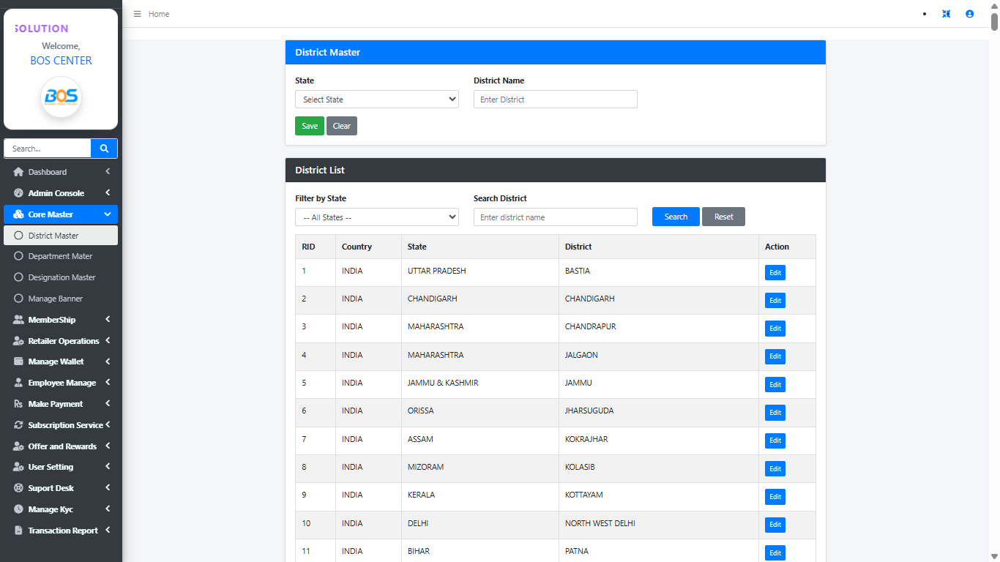
Core Master Department Master
Department Master is used to create and manage internal departments (for example: Support, Accounts, Operations, Tech). These departments are commonly used for employee mapping, ticket routing, and internal ownership tracking (based on your panel flow).
Purpose of Department Master
This module keeps the department list standardized across the panel. Once departments are created here, they can be used while creating employees and assigning ownership responsibilities.
Simple Example
If you want tickets to be handled by the correct team, you first create departments here, then map employees accordingly.
How to use Department Master
Add Department
Enter → Department Name + Add Description → save. Ensure name is unique and meaningful.
Edit Department
Use Edit only for corrections (spelling/format). Avoid frequent renaming to keep reporting consistent.
Best Practice
Define departments before creating employees so employee mapping is correct from day one.
Panel Screenshot (Reference)
The screenshot of Department Master panel here for clear reference.
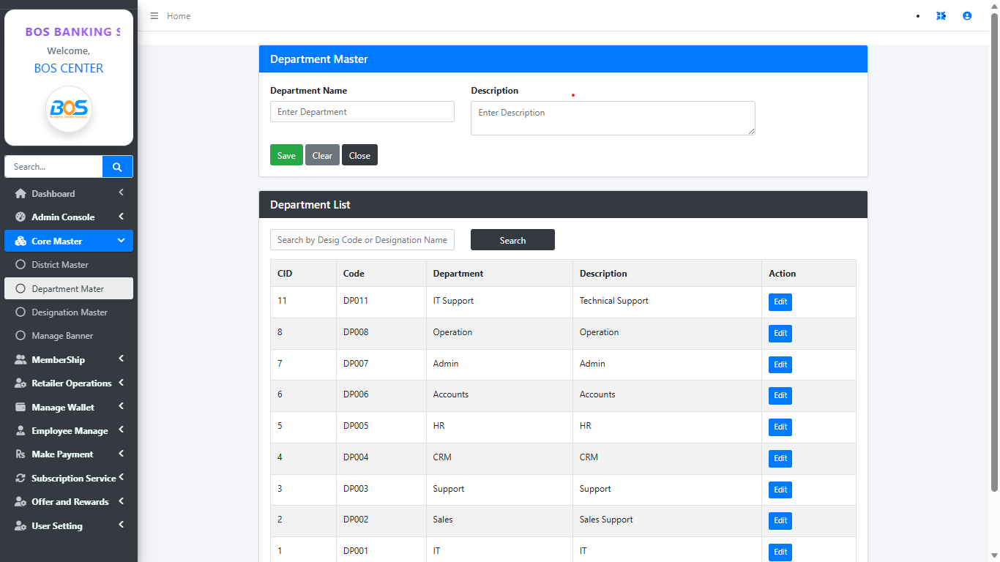
Core Master Designation Master
Designation Master is used to create and manage employee designations (for example: Support Executive, Accounts Executive, Manager). This keeps roles standardized while creating employees and helps organize internal access mapping and reporting.
Purpose of Designation Master
This module maintains a consistent list of designations across the panel. When employees are created, a designation can be selected so the organization structure remains clear.
Simple Example
Designations help identify responsibility levels (executive vs supervisor vs manager) in internal operations.
How to use Designation Master
Add Designation
Select Department → enter Designation Name → Add Description → save. Ensure it is unique and relevant.
Edit Designation
Use Edit for minor corrections only. Avoid frequent renaming to keep employee history consistent.
Best Practice
Create designations first, then map employees properly for smooth management and reporting.
Panel Screenshot (Reference)
The screenshot of Designation Master panel here for clear reference.
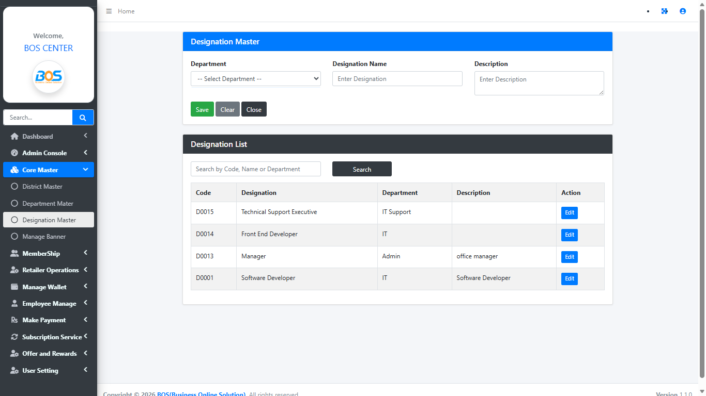
Membership → Create Admin Role
This module is used to create a Role (permission + menu visibility set) that will later be assigned to an Employee or Retailer. After creating the role, you will assign it to a user from Manage Retailer
First-Time Usage – Read Before Creating a Role
A role defines what menus a user can see and what actions they can perform. Services, reports, and operational access are finalized during onboarding from Manage Retailer.
- Create Admin Role is only for creating a new role (name, description, status, menu mapping).
- To edit an already created role, go to Manage Admin Role.
- A role becomes effective only after it is assigned to a user from Manage Retailer.
- Most common use-case: Create roles for Employees (Support, Accounts, Operations) and then assign them.
Create Role → Assign Role to User → Link Services/Reports → Verify Access
Critical Warning (Must Read)
While creating the role, you will choose a Status: ALL or Partial. This selection directly controls how much access this role will receive.
- ALL: Automatically assigns all available modules/menus to the role.
- Partial: You manually select only the modules/menus required for that job role.
Mandatory System Requirement (Do Not Skip)
The role will NOT work if you do not select “Home” while choosing menus/modules for the role.
- Home works as the base landing module for every role.
- If Home is not selected, users may login but face:
- Blank screen / broken dashboard
- Menus not loading correctly
- Navigation/redirection issues
Step-by-Step Guide (Create Role)
1) Select Application Name
Choose the application for which you are creating the role (example: B2B Solution). Roles can only be created for applications that are available as per your purchased/admin scope.
2) Enter Role Name
Give a clear role name based on responsibility. Examples: Support Executive, Accounts Executive, Operations Manager, Retailer Limited Access.
3) Add Role Description
Write a short description of what the role is allowed to do. Example: “Can view transaction reports and handle ticket support. No wallet access.”
4) Choose Status: ALL / Partial
Select Partial in most cases and manually assign menus. Select ALL only for trusted admin-only roles where full access is intended.
5) Select Menus to Display
Choose which menus should appear for this role. Start by selecting “Home” first (mandatory), then add only the required modules.
6) Save Role
Click Save/Create. Your role will now be available for assignment. Next step: assign it to a user from Manage Retailer.
Practical Examples (Easy Reference)
- Support Employee Role: Select menus like Support Desk + Transaction Report (and always Home).
- Accounts Employee Role: Select menus like Make Payment + required Reports (and always Home).
- Operations Role: Select only operational modules needed for daily monitoring (and always Home).
Video Walkthrough (Reference)
This video explains the complete flow of the Create Admin Role module —
role creation, selecting Partial vs ALL, mandatory menu selection
(including Home), and best practices.
It is recommended to watch this video after reading the guide above.
Next Steps (After Role Creation)
- To assign this role to a user (Retailer/Employee), go to Manage Retailer.
- To edit/update an already created role, go to Manage Admin Role.
Membership → Manage Admin Role
This module is used to edit and maintain existing roles created from
Create Admin Role.
From here, you can update role details, enable/disable roles, and control
menu visibility for the role.
First-Time Usage – Read This Carefully
- This screen works only on already created roles.
- Any change made here will affect all users currently using this role.
- Menu visibility changes take effect immediately after next login.
- Assignment of services, reports, actions, reset password, hold amount, etc. is done from Manage Retailer.
Create Role → Configure Role (here) → Assign Role to User → Link Services & Reports
What You Can Manage Here
Edit Role Details
Update role name and description to reflect responsibility changes (example: Support → Senior Support).
Active / Inactive
Disable a role temporarily without deleting it. Inactive roles cannot be used for new assignments.
Menu Visibility Control
Select which menus should be visible for this role.
Mandatory: Always keep Home selected.
Mandatory Rule – Home Menu
If “Home” is not selected, the role will not function correctly.
- Home is the base landing module for all roles
- Without Home, users may see a blank dashboard after login
- Other menus may fail to load or redirect incorrectly
Access Type Reminder
- ALL: Role inherits every menu/module available to Admin. Use only for trusted internal admin roles.
- Partial: Recommended for employees. Select only job-relevant menus.
Practical Edit Scenarios
- Support Role Update: Add/remove Ticket menus based on escalation level.
- Accounts Role Update: Enable reports without exposing wallet controls.
- Temporary Restriction: Set role to Inactive during audits or internal review.
Video Walkthrough (Reference)
Next Step
To assign this role to a Retailer or Employee and link services, reports, actions, reset password, or hold amount, go to Manage Retailer.
Membership → Manage Retailer
This module is the main hub to manage both Retailers and Employees — assign services/features, applications, roles, reports, reset passwords, and set hold amount. Most access issues happen due to missing Subscription or missing Application + Role.
First-Time User Guide (Recommended Flow)
Follow this order to onboard a working retailer/employee without “service not visible” or “role not appearing” issues.
Search & Filter (Retailer / Employee)
When you open this module, you can search users using the parameters below. By default retailer data is visible — switch User Type to view employees.
User Type
Choose Retailer or Employee. This is how employee side is managed — inside User Type itself.
From Date / To Date
Filter users by date range (format: mm/dd/yyyy) for faster lookup.
User Name
Search by user name (exact/partial depends on your panel behavior). Use this for quick pinpoint search.
What you manage from this module (Retailer / Employee)
This module is the operational hub for managing users. Common actions/columns you will use:
Action: Active / Inactive
Enable/disable the user when required by operations.
Features: Link services
Assign services (Recharge/BBPS/Travel etc.) to the retailer. Services shown depend on subscription.
Applications
Assign application access (example: B2B). Roles work only after application is assigned.
Roles
Assign role to retailer/employee as per application. Roles are created in Membership → Create Admin Role
Reports
Assign reports according to services given (example: only BBPS + Recharge reports if only those services are assigned).
Reset Password
Reset panel password for retailers/employees when required.
Edit: Hold Amount (Retailer)
For retailers, you can set a Hold Amount from Edit. Use carefully and keep internal notes for audit/dispute reference.
Subscription (Retailer Only) — Why it matters
A retailer’s Subscription decides which services will be visible when you click Features → Link. If the retailer has no subscription (or wrong one), then services may not appear.
Example: Subscription controls service visibility
• Travel Subscription → Flight, Bus, Hotel, etc.
• Utility Subscription → Recharge, BBPS, DMT, AEPS, etc.
If you assign only Travel Subscription, then only travel services appear during linking.
If you assign Utility Subscription, then only utility services appear during linking.
Where to set / fix subscription
• During creation:
Retailer Operations → Create Retailer
• For existing retailer:
Retailer Operations → Edit Retailer
Where subscription pricing is managed
To add/remove services inside subscription and set Monthly/Quarterly/Half-Yearly/Yearly charges, go to:
Admin Console → Manage Subscription
Features → Link (Assign services)
This is where you assign the required services to the retailer based on their need (Recharge, BBPS, Flight, Bus, etc.). Only services available under the retailer’s subscription will show here.
Service linking is subscription-driven
If subscription contains the service, it will appear for linking. If subscription does not contain the service, it will not appear.
Charge override during linking (special case)
Example service charges (for explanation):
Monthly-200 / Quarterly-500 / Half-yearly-700 / Yearly-1000
While linking, you can set a manual amount for that selected period
(example: Yearly selected, but amount set to 700 instead of 1000).
Note: Retailers can renew services from their panel, but they cannot edit the amount.
At renewal, the default subscription charges apply again.
Video: Linking Services + Changing Charges (During Linking)
This video demonstrates the complete flow of Features → Link — assigning services and setting a manual amount (override) during linking. Watch it after reading the section above.
Wallet Balance Requirement (Before enabling services)
While giving services to retailers, first ensure there is sufficient balance in the retailer wallet. Currently you have two operational options:
Option 1: Make Payment Approval
Go to: Make Payment → Make Payment Approval to approve and load wallet balance as per process.
Option 2: Wallet Transfer
Go to: Manage Wallet → Wallet Transfer to transfer balance to the retailer wallet.
Applications + Roles (Retailer / Employee)
For role assignment, the correct sequence is: Applications first → then Roles → Manage Role. If application is not assigned, roles may not appear correctly.
Step 1: Assign Application
Assign the correct application (example: B2B). Only after this, roles under that application will appear.
Step 2: Assign Roles
Go to Roles → Manage Role and assign the role. If role list looks empty, confirm the role exists under the same application.
Create / Edit Roles (References)
• Create a new role:
Membership → Create Admin Role
• Edit an already created role:
Membership → Manage Admin Role
Reminder: Role assignment, reports assignment, reset password, etc. are managed from this module (Manage Retailer).
Manage Admin Role is only for editing the role definition itself (menus/permissions).
Video: Assign Application Access + Roles
This video shows the correct flow inside Manage Retailer: assign Application first, then assign Roles under that application.
Reports → Manage Report
Reports control what financial and transaction data is visible to a Retailer or Employee. Reports must always be assigned strictly according to the services enabled to avoid confusion, data leakage, and support escalations.
Mandatory Reports (Must Assign)
The following reports are mandatory for every working retailer to ensure financial transparency, reconciliation, and audit readiness:
- Deposit Report — Shows all wallet credits including: wallet top-ups, subscription deductions, bonus credits, and refunds.
- Transfer Report — Shows all transaction-level debits including: service usage, charges, commissions, reversals, and refunds.
Together, these two reports cover wallet inflow + wallet outflow, making them essential for accurate accounting.
Service-Based Report Assignment (Example)
If a retailer is enabled only for:
Recharge and Bill Payment (BBPS)
Then assign only:
Recharge Transaction Report +
BBPS Transaction Report
Do NOT assign unrelated reports (example: Travel, Payout, AEPS)
if those services are not enabled.
Admin Controls: Hold Amount, Reset Password, and other actions
From this module you can apply operational controls for both retailers and employees. Note: Hold Amount is generally used for retailers.
Edit → Hold Amount (Retailer)
Set hold amount when required (dispute/risk control/business process). Use carefully and keep approval record for audit/dispute reference.
Reset Password (Retailer / Employee)
Reset password when requested or login blocked. Share credentials securely.
Critical usage guidance
Hold Amount is a high-impact action and can affect operations immediately. Perform only with proper authorization and maintain internal notes for tracking.
Video: Retailer's Manage Report & Hold Amount (Edit)
This video shows how to apply/update hold amount for a retailer using the Edit action, and what to verify after saving.
Employee Side (Managed in the same module)
To manage employees, select User Type → Employee. The following functions remain the same as retailer: Application assignment, Role assignment, Reports assignment, and Reset Password. Employees typically do not require Subscription, Services linking, or Hold Amount like retailers.
Quick Redirects (Most used)
Use these shortcuts during onboarding to quickly fix subscription, configure services, roles, and wallet.
Retailer Operations → Create Retailer
Assign subscription during onboarding of a new retailer.
Retailer Operations → Edit Retailer
Fix wrong/missing subscription for an existing retailer.
Admin Console → Manage Subscription
Manage service list inside subscriptions + monthly/quarterly/half-yearly/yearly charges.
Membership → Create Admin Role
Create new roles for retailers/employees (menu + permissions).
Membership → Manage Admin Role
Edit an already created role (role definition only).
Manage Wallet → Wallet Transfer
Fund retailer wallet before enabling/renewing services.
Make Payment → Make Payment Approval
Approve payment requests to load wallet balance.
Retailer Operations Create Retailer
This module is the main hub for retailer onboarding and the place where everything starts. When opened, a form pops up to create a retailer and assign a Plan (Subscription). KYC verification (Aadhaar & PAN) is completed on the Retailer-side panel / APK. To check whether a retailer is verified (KYC done / VPA created / QR generated), open Retailer Operations → Retailer Details.
First-Time Guide — Correct Onboarding Flow
Start here. This is the recommended onboarding sequence to create a retailer correctly and avoid issues later.
Open Retailer Details
Check KYC status, VPA/QR generation, and complete retailer activity summary.
Open Edit Retailer
Use this for plan changes or retailer profile corrections after creation.
Open Membership → Manage Retailer
Assign services & reports based on the subscription and business requirement.
Video Demonstration (Recommended to Watch First)
This video should show: Open Create Retailer → select Application Type → fill mandatory fields → select Plan → fill Retailer Bank Details → Submit.
Important Notes (Read Carefully)
- Only retailer is created here and a subscription is assigned. Services are linked later from Membership → Manage Retailer → Features → Link.
- KYC verification (Aadhaar Card & PanCard) is done on retailer side. To check whether the retailer is verified, open Retailer Operations → Retailer Details.
- On the bottom of the form there is Retailer Bank Details. These are mandatory and will be used for VPA creation of the retailer. Once submitted, these details cannot be edited, so please verify all information carefully before proceeding.
- The bank account is used for 2 purposes: (1) the account on which the VPA is generated, and (2) the account where the retailer receives collection by generating QR code.
- VPA/QR functionality is done on the retailer side on APK (works only if APK is enabled). It may vary user-to-user/device-to-device.
- You can see who has done KYC / who has generated VPA/QR and everything about that retailer in Retailer Operations → Retailer Details.
- One last thing: when verified, the data on the docs will be filled automatically (as per KYC verification behavior).
Create Retailer Form — What to Fill
Fill mandatory fields first. Optional fields can be added now or later. Plan and Bank Details should never be skipped.
Mandatory Fields (Required for Creation)
- Application Type (mandatory): Select scope — Banking (Utility) / Travel / Banking + Travel (at least one is mandatory)
- Company Name (mandatory): Example — ABC Services
- First Name (mandatory): Name of the retailer (after verified KYC, name/data may auto-fill)
- DOB (mandatory): DD-MM-YYYY (Retailer must be 18+)
- Email ID (mandatory): Retailer email
- Mobile No (mandatory): Retailer mobile
- State (mandatory): Cannot be empty
- Plan (mandatory): Subscription must be selected
Optional Fields (Can be filled now or later)
Upload Profile Photo
Optional. Add retailer profile picture if required.
Aadhaar Card No
Optional here (KYC is completed on retailer side).
Pan Card Number
Optional here (KYC is completed on retailer side).
Last Name
Optional. Add if available.
Alternate Mobile No
Optional. Backup contact number.
GST No
Optional. Add only if applicable.
Permanent Address
Optional. Residential address of retailer.
Office Address
Optional. Shop/office address if applicable.
District
Optional. Select district if required.
Pincode
Optional. Add pincode if available.
Retailer Bank Details (All Mandatory)
These details are mandatory and will be used for VPA creation and QR collection operations (Retailer side APK if enabled).
- VPA generation on the retailer bank account
- Collection via QR generated by retailer (Retailer side / APK)
Account Type
Saving / Current (define the account type).
Business Name
Example: General store / Shoe shop / Miscellaneous-Stores etc.
Account Holder Name
Bank account holder name.
Account Number
Retailer bank account number.
IFSC Code
IFSC code of the bank account.
Seller Identifier
The name displayed on QR (Example: ABC STORE PAY).
After Creating Retailer — Next Actions
Check Verification & Status
View KYC done / pending, VPA/QR generated status, and full retailer activity.
Assign Services & Reports
Assign only relevant services/reports based on what the retailer needs.
Retailer Operations Edit Retailer
This module is purely for correction/edit of retailer details. When this module is opened, all retailers are visible. You can search a specific retailer from the list. After clicking Edit, the form will pop up with the retailer’s previous details already visible (pre-filled). Editing permissions depend on the retailer’s verification status.
First-Time Guide — How to Edit a Retailer
Follow this flow to update retailer details safely without impacting KYC/verification.
Video Demonstration (Recommended to Watch First)
This short video showing: Open Edit Retailer → search retailer → click edit → check status (Verified/KYC Pending) → update allowed fields → save.
How This Module Works
- This module is purely for correction/edit of retailer details.
- When the module opens, all retailers are visible in the list.
- You can search a specific retailer from the list by using the search functionality.
- After clicking Edit, the form pops up and previous details will be visible (pre-filled).
- If the retailer is not verified, the details can be edited and updated (Exception being the bank details as discussed earlier).
- If the retailer is verified, only minimum fields will be available to edit (restricted editing).
- While editing, the form shows the retailer’s verification status first under the profile: Verified or KYC Pending.
Editing Rules — Verified vs KYC Pending
Editing permission changes automatically based on retailer verification status shown in the edit form.
If Retailer is Verified
Verified retailers are unable to edit most core details. Only minimum fields are available for update.
- Profile (limited fields only)
- Plan (Subscription) can be updated
- Some non-mandatory fields can be updated (as allowed in the form)
If Retailer is KYC Pending (Not Verified)
When KYC is pending, the retailer details can be edited and updated for correction before verification.
- More fields are editable compared to a verified retailer.
- This is the best stage to correct mistakes before KYC completion.
Visual Reference — Verified vs Non-Verified
Below screenshots show how the Edit Retailer form behaves when a retailer is Verified versus when the retailer is KYC Pending. This helps first-time users understand why certain fields are locked or editable.
Verified Retailer (Restricted Editing)
When the retailer is verified, only minimum fields can be edited. Profile details, Plan (Subscription), and limited non-mandatory fields remain editable. Core details are locked to match verified documents.
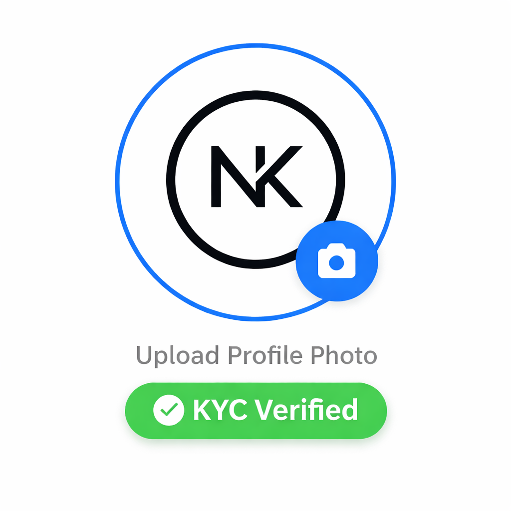
KYC Pending Retailer (Editable)
When KYC is pending, retailer details can be edited for correction before verification. This is the recommended stage to fix mistakes. Bank details remain an exception as discussed earlier.
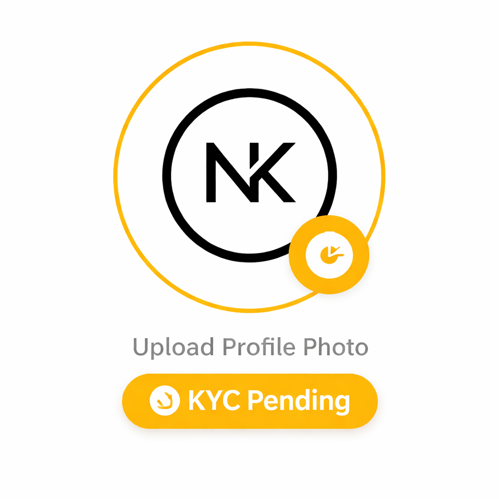
Where to Confirm Complete Status
The edit form shows whether the retailer is verified or not under the profile. For complete details (KYC status, VPA/QR status, readiness, and full retailer summary), open Retailer Operations → Retailer Details.
Open Retailer Details
Check verification, KYC status, VPA/QR status, and full retailer activity summary.
Retailer Operations Retailer Details
This module works as the information hub for retailers. It provides a complete view of retailer identity, account status, KYC status, settlement account details, and QR/VPA readiness indicators. The scope of this module is to help the admin verify and review retailer details using the parameters listed below.
First-Time Guide — Recommended Flow
Use this flow whenever you want to confirm whether a retailer is verified, active, and ready for QR/VPA collections.
Video Demonstration
Reference walkthrough showing how the module opens, how to search/filter by KYC status and by number / email / user ID, and how to use the QR Intent URL for admin QR preview.
Search & Filters
- Search retailer using mobile number, email, or User ID.
- Filter retailers by KYC status: Verified or Pending KYC.
Retailer Details Parameters (What You Will See)
The parameters below are displayed for admin reference and verification purposes.
Retailer Identity
Contact Details
Account & KYC Status
Settlement Account (Bank)
QR / UPI Intent
QR / UPI Intent (Admin View)
These parameters indicate whether the retailer has generated a QR and whether it is active. If the QR is generated, the QR Intent URL becomes clickable and opens the QR with UPI intent for admin review.
- QR Gen. shows whether the QR has been generated (Yes / No).
- QR Active shows whether the generated QR is currently active.
- QR Intent URL opens the QR with UPI intent once QR generation is completed.
Visual Reference (Admin View + APK View)
Reference visuals to understand how the Retailer Details screen looks on the admin panel, and how the QR section appears on retailer-side APK for both states (not generated vs generated).
APK View — QR Not Generated vs QR Generated
Side-by-side comparison of how the QR section looks before and after QR generation on retailer-side APK.
QR Not Generated
Retailer has not generated QR yet.
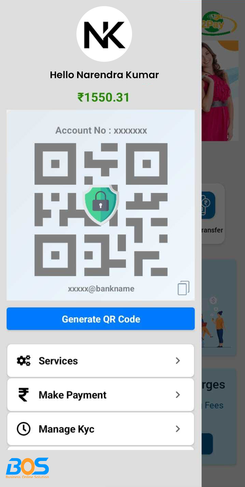
QR Generated
Retailer has generated QR successfully.
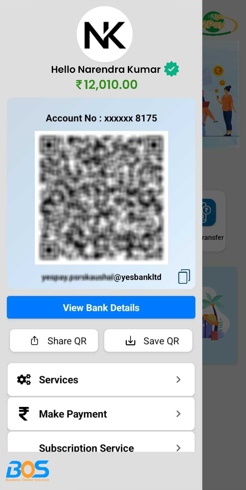
Quick Redirects
Use these shortcuts for the most common next actions after reviewing retailer details.
Retailer Operations → Create Retailer
Create a new retailer and assign a plan (subscription).
Retailer Operations → Edit Retailer
Edit/correct retailer information (as allowed) and update plan (subscription) if required.
Membership → Manage Retailer
Link services and reports based on subscription mapping and operational requirement.
Manage Wallet Wallet Transfer
This module is used by the admin to credit or debit a retailer’s wallet balance. It is also the primary and direct method to load/adjust wallet balance for any retailer.
First-Time Guide — Correct Wallet Loading Flow
There are two valid ways to load/transfer wallet balance. Use the direct method first whenever applicable.
Primary Method: Direct Wallet Transfer (Admin)
- This is the first and direct method to load/transfer wallet balance to a retailer.
- Admin can credit (increase balance) or debit (reduce balance) from this module.
- Use this method for instant wallet top-up, balance adjustments, or administrative corrections.
- Always add clear remarks for audit and tracking purposes.
Secondary Method: Retailer Payment Request → Admin Approval
Use this flow when the retailer deposits funds and raises a wallet funding request.
- Retailer transfers the amount to the admin’s account.
- Retailer uploads the payment slip and required details and raises a request under Make Payment.
- Admin reviews the request and approves or rejects it from Make Payment → Make Payment Approval.
- After approval, the wallet can be loaded as per the approved request.
Video Demonstration
This walkthrough demonstrates the Wallet Transfer process (direct credit/debit).
Retailer Wallet Balance — Where It Reflects
After a wallet transfer (credit or debit), the updated wallet balance is immediately reflected on the retailer side. Below visuals show where the retailer can view the wallet balance on Web Panel and APK.
Retailer Web Panel
The wallet balance is visible on the retailer web dashboard and reflects the latest available balance after every approved wallet transaction.
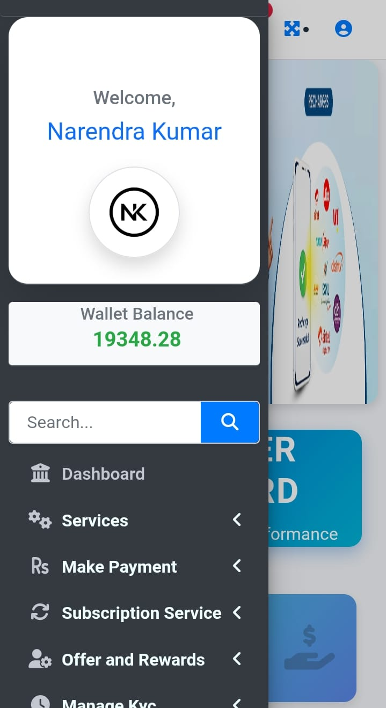
Retailer APK
The same wallet balance is also reflected on the retailer APK, allowing the retailer to view the updated available balance in real time.
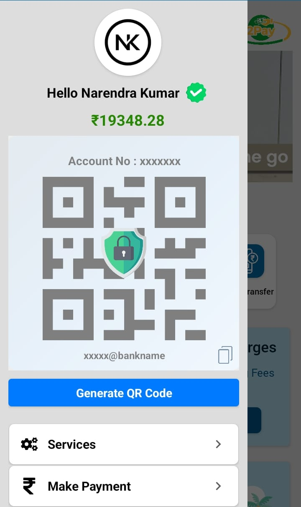
Quick Redirects
Use the shortcuts below for related wallet and payment operations.
Manage Wallet → Wallet Transfer
Direct wallet credit/debit for retailers (primary method).
Make Payment → Make Payment Approval
Admin approves or rejects retailer payment requests.
Report → Transaction Report
View wallet transfer history and all related credit/debit transactions for tracking, reconciliation, and audit purposes.
Employee Manage Manage Employee
This module is used to add new employees and edit existing employee details. By default, all employees are visible in the list when the module is opened. You can search employees using the criteria: Employee Code, Employee Name, and Mobile No.
First-Time Guide — Correct Employee Onboarding Flow
Follow this sequence to create employees correctly and ensure proper access configuration.
Pre-Requisites (Masters)
Before creating an employee, ensure the required masters are available:
- For creating a new department, go to Core Master → Department Master.
- For creating a designation, go to Core Master → Designation Master.
Module Overview
- This module allows you to add new employees and edit existing employees.
- By default, all employees are visible when the module is opened.
- You can search employees by Employee Code, Employee Name, and Mobile No.
Create Employee — Required Parameters
Click + Add Employee (top-right). The employee creation form opens with the mandatory fields below.
Mandatory Fields
Access Configuration (Linking / Permissions)
After creating an employee, configure access, status, roles, reports, and application permissions using the modules below.
- For Active/Inactive an employee and assigning roles, reports, and the application the employee can access, go to Membership → Manage Retailer.
- To create new roles for employees, go to Membership → Create Admin Role.
Video Demonstration
Demonstration of employee listing (default view), search using Employee Code / Employee Name / Mobile No, adding a new employee using + Add Employee, and editing an existing employee record.
Quick Redirects
Use these shortcuts for master setup, role creation, and employee access configuration.
Core Master → Department Master
Create/manage departments required for employee onboarding.
Core Master → Designation Master
Create/manage designations mapped to departments.
Membership → Manage Retailer
Active/Inactive employee and assign roles, reports, and application access.
Membership → Create Admin Role
Create roles to be assigned to employees.
Make Payment Make Payment Approval
This module allows the admin to review, verify, and approve/reject wallet top-up requests raised by retailers. Retailers submit payment details (UTR/Transaction ID, amount, payment mode, slip, etc.), and the admin verifies the payment against the respective admin account before taking an approval decision.
First-Time Guide — Correct Approval Flow
Use this recommended sequence to approve wallet top-up requests safely and avoid incorrect credits.
Filtering & Searching Requests
- This module allows the admin to filter wallet top-up requests made by retailers.
- You can filter requests by date range and request parameters, or by selecting a specific retailer.
- Use filtering to quickly locate a request when there are multiple pending entries.
Request Details (What Admin Reviews)
Each make payment request includes the following verification fields. Review them carefully before approval.
Payment Verification (Admin Responsibility)
- Admin must verify the payment in the respective admin bank account before approving.
- Match UTR/Transaction ID and Amount with the actual credit received.
- Admin can manage the bank accounts used for receiving retailer payments from Admin Console → Bank Master.
Approve or Reject (Decision Rules)
Use the approval decision strictly based on verification outcome.
Approve When
- UTR/Transaction ID matches admin account credit.
- Amount matches exactly.
- Payment mode details are consistent.
- Slip (if provided) supports the same transaction.
Reject When
- UTR/Transaction ID is wrong or not found.
- Wrong amount is shared / amount mismatch.
- Slip/details are incorrect or not verifiable.
- Payment credited to a different account than mentioned.
Make Payment Report (Approved / Rejected History)
All make payment requests — whether approved or rejected — are available in: Make Payment → Make Payment Report.
Video Demonstration
Demonstrates request filtering, reviewing payment details (UTR/amount/mode/slip), verifying payment in admin account, and approving/rejecting the request.
Quick Redirects
Related modules for account management and payment request tracking.
Admin Console → Bank Master
Manage admin bank accounts used for receiving retailer payments.
Make Payment → Make Payment Report
View all approved/rejected make payment requests (history).
Manage Wallet → Wallet Transfer
Primary method to directly credit/debit retailer wallet (admin-driven).
Make Payment Make Payment Reports
This module provides the report view for all make payment requests raised by retailers. Admin can filter records date-wise, by Retailer Code (specific or all), and by Report Mode to view All, Pending, Approved, or Rejected requests. For approved or rejected requests, admin remarks are displayed for audit and reference.
First-Time Guide — Recommended Report Usage
Use the report filters below to quickly find payment requests and verify their final status.
Filters Available
Report Mode (Status View)
Use report mode to focus on the required status category.
All
Shows all requests: pending, approved, and rejected.
Pending
Shows requests awaiting admin decision.
Approved
Shows requests that were approved by admin.
Rejected
Shows requests rejected by admin.
Admin Remarks (Approval / Rejection Notes)
For approved or rejected requests, admin remarks are displayed to capture decision context and provide an audit-ready reference.
- Approved: Remarks may include confirmation notes (UTR verified, amount matched, etc.).
- Rejected: Remarks typically explain reason (UTR not found, wrong amount, incorrect slip, etc.).
Make Payment Reports — Filters View
View of the report filtering (date-wise, retailer code, mode selection) and reviewing admin remarks.
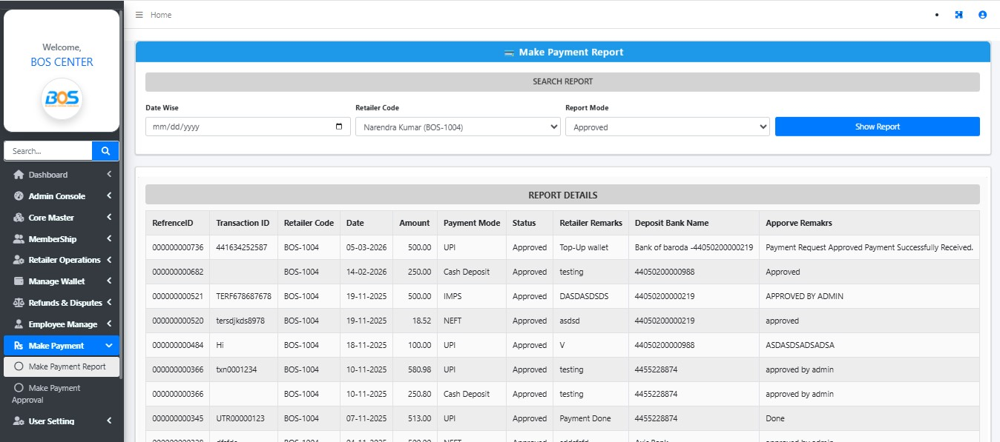
Quick Redirects
Related make payment modules for request approval and verification.
Make Payment → Make Payment Approval
Approve or reject retailer make payment requests.
Admin Console → Bank Master
Manage admin bank accounts used for receiving retailer payments.
User Setting User Notification Master
This module is used by the admin to send notifications to retailers for important updates such as charge changes, API/service issues, or service maintenance. Notifications can be configured with a validity window (from/to), and can optionally include an image and a redirect link.
First-Time Guide — Recommended Notification Flow
Follow this sequence to ensure the notice is targeted correctly and is visible only during the required period.
Target / Scope (Retailer Selection)
Notification Content (What Retailer Sees)
These fields define the headline and details shown to retailers.
Validity Window (Visibility Control)
Manage Notifications (Edit / Delete)
- Admin can edit an existing notification to update title, message, validity, or targeting.
- Admin can delete notifications that are no longer required.
Video Demonstrations
Two reference videos are used here: one for creating/managing notifications (admin view), and one showing how notifications appear on the retailer side.
Admin View — Create / Edit / Delete Notification
Retailer View — How Notification Appears
Quick Redirects
Related modules for wallet top-up flow and service communications.
Make Payment → Make Payment Approval
Approve/reject retailer wallet top-up requests submitted with UTR/slip details.
Manage Wallet → Wallet Transfer
Direct admin wallet credit/debit (primary wallet loading method).
Make Payment → Make Payment Reports
View all approved/rejected/pending make payment requests with admin remarks.
User Setting Setting
This module is used to configure cancellation charges from the admin side for the Travel services. These charges are applied when a retailer/user cancels a travel booking (Flight/Bus, etc.). The cancellation charge can be configured as Percentage or Flat, and can be edited or deleted later.
First-Time Guide — Correct Cancellation Charge Setup Flow
Follow this flow to set cancellation charges correctly and ensure consistent refund calculations across travel services.
When Cancellation Charges Apply
- This setting is applicable only for the Travel sections.
- When a user cancels a booking (Flight/Bus, etc.), the vendor returns a refundable amount (as per vendor policy).
- Admin-side cancellation charges configured here are applied on the refundable amount to calculate the final refund.
- Charges apply on all sectors/services under travel where cancellation/refund is supported.
Configuration Options
Cancellation charges can be set as percentage-based or flat amount.
Example — Refund Calculation (As Per Your Scenario)
Edit / Delete Cancellation Charges
Charges can be updated anytime if cancellation policy changes.
- You can edit the cancellation charge configuration (percentage/flat) as per business updates.
- You can delete the cancellation charge rule if it is no longer applicable.
Video Demonstration
Demonstrates how to configure cancellation charges (percentage/flat) and how to edit/delete them from admin settings.
Refunds & Disputes Transaction Dispute
Transaction Dispute is the approval workspace where Admin reviews all tickets marked as Dispute (Refundable) by the assigned employee. This module finalizes whether a transaction amount should be refunded or rejected.
- Approve – Refund amount is credited back to retailer wallet.
- Reject – Dispute is closed with final remarks.
Quick Guide (Recommended Workflow)
Use this flow to validate the dispute, approve or reject the refund, and ensure the final verdict is visible in the dispute report.
How a Transaction Dispute Reaches This Module
This explains the exact lifecycle from retailer complaint to admin approval/rejection.
Search Criteria (Filter Disputes)
Use filters to quickly find disputes for a specific retailer or review all disputes in one view.
Dispute Table Fields (What Each Column Means)
These fields help you validate the dispute before opening the approval form.
Action → Approve (Opens Detailed Dispute Window)
When you click Approve from the table, a window opens with complete ticket + transaction details and an admin action area.
Admin Decision (Approve / Reject)
Admin reviews the employee remarks and the transaction breakdown, then records the final decision with clear remarks.
Final Verdict Visibility (Where the Decision Appears)
After admin submits the decision, the outcome is recorded and is visible in dispute reports.
Refunds & Disputes Cancellation Dispute
Cancellation Dispute is the Admin approval workspace for travel booking cancellation refund requests raised by retailers for Bus / Flight / Train. This page works as your decision queue. After Admin approves or rejects a request, the final record is stored in Refunds & Disputes → Cancel Dispute Report and the same verdict is visible to the retailer.
Reject — closes the request as Rejected with a clear Admin remark (mandatory for audit).
Complete Cancellation Dispute Workflow
Retailer raises cancellation → Admin verifies refund breakup → Admin approves/rejects → entry moves to final report.
- Operator / Airline cancellation charges (as per vendor policy)
- Service charge (platform/service fee, if applicable)
- GST (if applicable)
- Admin cancellation charge (if configured in User Setting → Settings)
- Booking Ref, PNR, route (From/To), Travel Date
- Fare and the Refund / Service Charge / GST breakup
- Final Refund Amount to be approved
- Admin remark for audit trail
- Approve — confirms the final refund amount and adds a remark.
- Reject — rejects the request; a clear reason in remarks is mandatory.
How to Use This Module (Admin)
Use the summary counters and filters to quickly find the right request and take action.
Summary Counters (Top Cards)
- Total — Total cancellation requests available.
- Pending — Requests awaiting Admin decision.
- Approved — Requests approved by Admin.
- Rejected — Requests rejected by Admin.
Filters / Search (List Page)
Table Fields (What Each Row Means)
Each row represents one cancellation request. Use View to open details and approve/reject.
Cancellation Details Window (View → Approve/Reject)
The View window is where Admin validates the refund breakup and records the final decision.
What to verify inside the popup
Examples: “Approved after verifying operator cancellation response.” / “Rejected due to non-refundable fare class.”
Approve / Reject
- Approve — confirms the refund and completes the approval.
- Reject — denies the request; add a clear reason in remarks.
- After action, the entry moves to Cancel Dispute Report.
Demo Video — Cancellation Dispute (Full Flow)
This video demonstrates the full journey: retailer cancels booking → request enters Admin queue → Admin approves/rejects → final entry appears in the report.
Use View Full for fullscreen playback (spacebar toggles play/pause).
Refunds & Disputes Cancel Dispute Report
The Cancel Dispute Report is the consolidated report of all travel booking cancellation requests raised by retailers for Bus / Flight / Train. It shows the current outcome of each request — whether it is still Initiated (awaiting action), Completed (approved and processed), or Rejected (declined with remarks). Admin can review records for all retailers or narrow results to a specific retailer and service type.
Overview — What This Report Covers
Use this module to monitor cancellation activity and verify refund outcomes across travel services.
Completed — request is successfully processed (approved).
Rejected — request is declined by admin with remarks.
Quick Guide — How to Use This Report
Screen Reference — Cancel Dispute Report
The screenshot below shows the report layout, summary counters, filters, and status view (Initiated / Completed / Rejected).
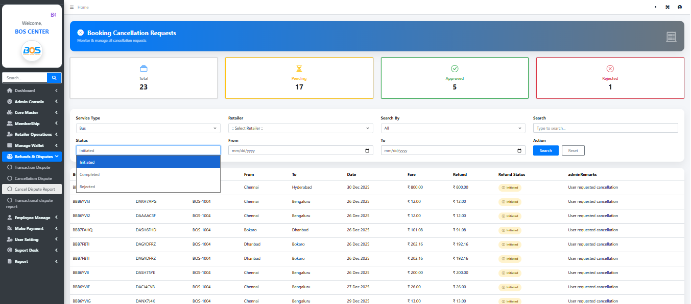
Summary Counters (Top Cards)
These counters provide a quick snapshot of cancellation requests across the selected service type.
Filters / Search (Find Cancellation Records)
Use filters to narrow results by service, retailer, booking identifiers, and status.
Report Table Fields (What Each Column Means)
Each row represents one travel booking cancellation request. Use the fields below to verify the request quickly.
Common Support Scenarios (How to Respond)
Refunds & Disputes Transaction Dispute Report
Transaction Dispute Report is the final audit report for all disputes processed in Refunds & Disputes → Transaction Dispute. Every ticket that is closed (Approved or Rejected) is recorded here with the final admin remarks, and the full complaint history is available under Action → View. The same verdict is also visible on the retailer side dispute report.
Quick Guide — How to Use This Report
Follow this flow to locate a closed dispute, open the full history, and verify refund entry (if approved).
Filters / Search (Find Closed Dispute Records)
Use these filters to narrow down results and quickly open the correct complaint history.
Report Table Fields (What Each Column Means)
Each row represents a dispute ticket that has been closed with a final decision.
Action → View (Complaint History Popup)
The Complaint History window shows the final decision summary and provides two actions: Open Timeline and View Refunds Details (only when approved).
What you see in Complaint History
Open Timeline (Full Lifecycle of the Ticket)
Timeline shows the complete journey of the ticket from creation to closure with timestamps and remarks.
View Refunds Details (Shown Only When Dispute Is Approved)
If Admin approved the dispute, this screen shows the refund credit entry posted to the retailer wallet.
Video Demonstration — Transaction Dispute Report
This video explains how to use the Transaction Dispute Report to find a closed dispute, open the complaint history, review the ticket timeline, and verify the refund entry (if the dispute was approved).
Quick Redirects
Related modules commonly used before and after checking the dispute report.
Refunds & Disputes → Transaction Dispute
Where Admin takes the final approve/reject decision before the record appears in this report.
Support Desk → Ticket Management
Track Open/In-Progress tickets and assignment flow that leads to disputes.
Manage Wallet → Wallet Transfer
Verify wallet credit/debit if you need to cross-check refund posting or manual adjustments.
Support Desk Ticket Management
Ticket Management is the primary workspace to track, assign/reassign, and resolve tickets raised by retailers. Admin also maintains the complete audit trail by collecting updates from the retailer and the assigned employee through chat.
Manual Flow — How to Handle Tickets (Recommended)
Follow these steps in order to ensure every ticket is tracked, assigned, and resolved professionally.
Search Criteria
Ticket Tracker Filters
These filters appear under the Ticket Tracker header and work the same for both modes.
Ticket Table Structure (What You Will See)
Ticket Life Cycle (Operational Flow)
Understand how a ticket moves between Retailer → Admin → Employee and ends in Dispute or Closure.
If Ticket Goes to Dispute
If investigation confirms a refundable case, the ticket is marked as Dispute. After that, you can track it from the dispute modules below.
Travel cancellations (Bus/Flight/Train) are also treated as dispute cases.
If Ticket is Closed
A ticket is marked Closed when the issue is resolved and confirmed. Below are common closure scenarios and the recommended admin actions.
Action → Chat (Retailer + Employee)
This is the communication hub for ticket resolution. Admin chats with the retailer and the employee separately to collect proofs, share findings, and confirm closure/dispute decisions.
Ticket Assignment & Reassignment – Video Demonstration
These videos demonstrate how administrators can assign a ticket to an employee and reassign it to another employee when required.
Support Desk Assign Ticket
Assign Ticket is used to assign Open tickets to employees in bulk (or individually) with a defined priority. This module helps distribute the daily open-ticket queue quickly and consistently.
Manual Flow — Bulk Assign Open Tickets (Recommended)
Follow these steps to assign open tickets correctly and avoid mis-routing.
Assignment Controls
These controls apply to both single-ticket assignment and bulk assignment.
Single vs Bulk Assignment
Choose one ticket or assign multiple open tickets in a single action.
Ticket Table Structure (Open Tickets)
The ticket table contains the following fields:
After Assignment (Next Steps)
After tickets are assigned, monitoring and updates continue in Ticket Management.
Video Demonstration
The demo video here showing employee selection, priority setting, and bulk ticket assignment.
Report Transaction Report
This module shows retailer-wise transaction reports. The reports visible here are based on the services assigned to the retailer from Membership → Manage Retailer. Example: if a retailer has only Recharge and BBPS, then only those service reports will be visible. Apart from service reports, two reports should always be visible: Deposit and Transfer Report.
What You Will See in This Module
Use this as a quick reference to understand how reports are grouped and where each entry comes from.
Service Reports
Reports shown as per services assigned (Recharge, BBPS, etc.). Each service report contains a Report Mode section for sub-reports (example: history + commission).
Deposit
Always shown. Contains all wallet credit entries from multiple sources (MakePayment, Wallet Transfer, refunds, promo, APK deposits).
Transfer Report
Always shown. Contains APK-side transfer entries (wallet payout to self bank / transfer to another retailer mobile).
First-Time Guide — How to Check Reports Correctly
Service Reports (Recharge / BBPS / Other Services)
These reports are visible based on services assigned to the retailer.
Deposit (Always Visible) — Wallet Credit Sources
This report contains wallet credit entries. Each entry is shown under a specific Report Mode based on the source of deposit.
Transfer Report (Always Visible) — APK Transfers
This report contains wallet transfers initiated from the APK side.
Visual Reference
The screenshot below helps users quickly identify the exact table layout used in the admin panel.
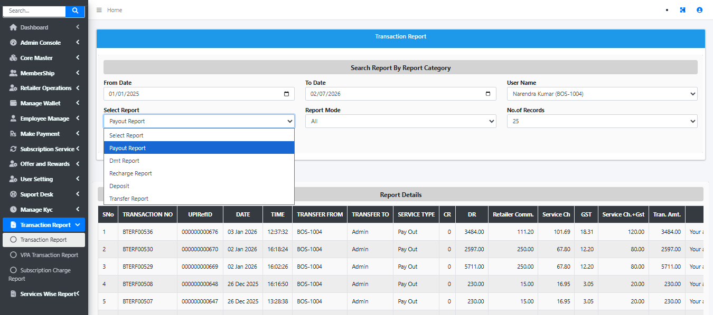
Quick Redirects
Modules referenced inside report modes.
Membership → Manage Retailer
Assign services (controls which reports appear here).
Make Payment → Make Payment Approval
Approved makepayment deposits appear in Deposit → MakePayment Deposit.
Manage Wallet → Wallet Transfer
Wallet transfer entries appear in Deposit → Wallet Transfer.
Support Desk → Dispute Approval
Approved refunds appear in Deposit → Refunds Deposit.
Admin Console → Manage Promo Code
Promo credits appear in Deposit → Promo Deposit.
Retailer Operations → Create Retailer
Retailer bank details are used for Transfer Report → To Self Transfer.
Report VPA Transaction Report
This report shows the transactions where amount is received on the retailer VPA/QR (retailer-side QR collections). Any funds received through the QR/VPA will be visible here. Admin can filter retailer-wise to view a specific retailer’s collection history.
First-Time Guide — How to Check VPA Collections
Use this flow to quickly verify QR/VPA received payments and their final status.
Filters Available
Report Columns (What You Will See)
These fields are shown in the VPA Transaction Report table for admin reference and verification.
How to Interpret Status
- Success: Amount is received on the retailer VPA/QR.
- Failed: Amount is not received; check Gateway Message for reason (example: insufficient funds).
Visual Reference — VPA Transaction Report Screen
Add the admin panel screenshot here to help users identify columns and verify status quickly.
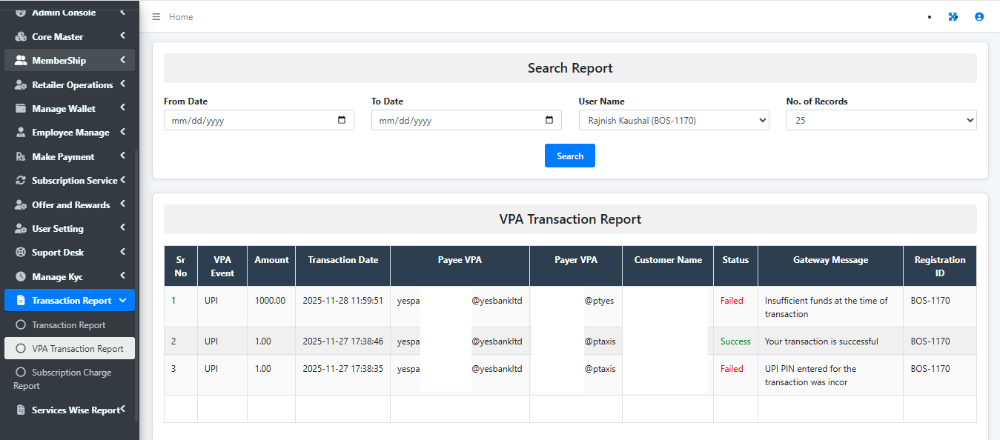
Quick Redirects
Use these related modules to verify retailer QR/VPA readiness and details.
Retailer Operations → Retailer Details
Verify KYC status, QR generated, QR active, and QR intent URL availability for the retailer.
Retailer Operations → Create Retailer
Retailer bank details are mandatory and used for VPA/QR creation on retailer side (APK).
Report Subscription Charge Report
The Subscription Charge Report is used to audit all subscription/service charges applied to retailers. These entries are generated in two common cases: (1) when a new retailer is onboarded and services/subscription are linked from Membership → Manage Retailer, and (2) when the retailer performs a renewal from their own panel. This report helps Admin and Support teams verify when a subscription charge was applied, for which service/plan, and against which retailer.
First-Time Guide — Verify Subscription Charges
Use this flow to confirm onboarding-time charges, renewal deductions, and service activation billing for any retailer.
Filters Available
Report Columns (What You Will See)
These fields help Admin validate which subscription charge was applied, on which date, for which retailer, and under which service/plan configuration.
How to Interpret Charges
- Charged: Subscription amount has been successfully applied against the retailer.
- Pending (If Used): Entry created but billing is not finalized yet (check system workflow).
- Reversed (If Used): Charge entry rolled back due to cancellation, failure, or admin adjustment.
Visual Reference — Subscription Charge Report Screen
The screenshot below helps users quickly identify the exact table layout used in the admin panel. Match the Retailer, Service/Plan, Charge Type, Amount, and Status columns to confirm onboarding and renewal billing entries without confusion.
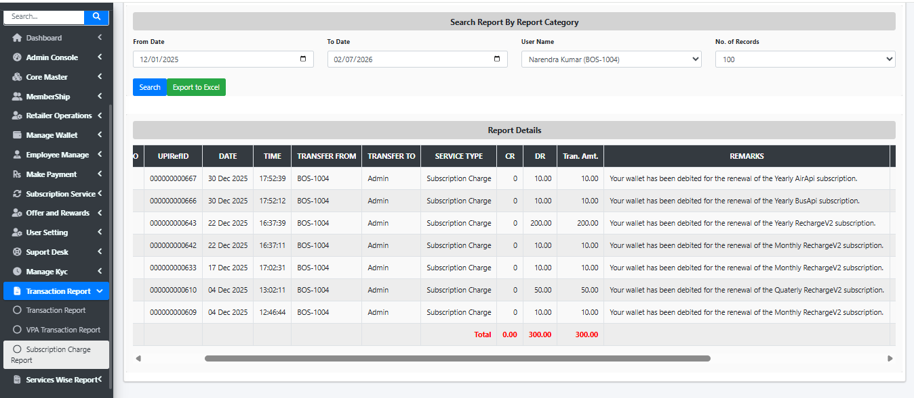
Quick Redirects
Use these related modules to cross-verify subscription charge origin, service linking, and subscription plan configuration. These shortcuts reduce support time by taking you directly to the module that triggers subscription billing.
Membership → Manage Retailer
Verify which services were linked to the retailer (and when). This is the most common source of activation-time subscription charges.
Admin Console → Manage Subscription
Check subscription plans, pricing, duration, and active/inactive configuration that affects renewal and onboarding charges.
Retailer Operations → Retailer Details
Confirm retailer profile status and identifiers used in subscription charge mapping (useful for verification and support).
Retailer Dashboard (User Guide + Walkthrough)
This dashboard is your daily control center. It shows your wallet balance, business & commission, ticket status, and your enabled services — plus quick shortcuts so you can operate without confusion.
First-Time User Guide (Start Here)
Follow these steps once during first login. Each step opens the exact manual section and highlights the menu in the sidebar.
Quick Links (Most Used)
One-click shortcuts for daily operations.
Top Banner (Admin Configured)
When the retailer panel opens, the banner appears at the top. This banner is configured from the admin side. If a redirect link is attached, clicking the banner will open the configured page/module.
Visual Walkthrough (Video + Profile Update)
This visual reference helps you understand the dashboard layout and the profile update process. Use View to open the video/image in fullscreen for a clearer step-by-step preview.
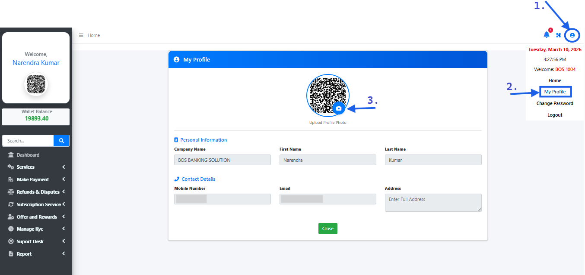
Overview of Your System Performance
Meaning of each tile shown on the dashboard.
Ticket Status (Quick Understanding)
Ticket tiles are grouped into four stages. Use this guide to understand what each status means.
Wallet Balance & Top-up Process
On the left side under your profile, your current usable balance is displayed. This balance is used for all services.
Enabled Services (Quick Access)
Your enabled services appear at the bottom. You can access them directly from here or from the side menu: Services.
Retailer Services (Access & Operational Guide)
This section contains all services available for your retailer account. Services shown here are controlled by the Admin Subscription and your assigned Role Configuration. If a service is not visible in your panel, it means it is not enabled for your account.
Service Availability & Access Control
Your service visibility depends on admin configuration (subscription + role). Retailers cannot enable/disable services themselves.
Check or Renew Your Services
To verify which services are currently assigned to your account or to renew expired services, use the Subscription Services module.
Standard Service Flow (How Services Work)
Most services follow the same operational pattern. Service-specific fields may differ (recharge vs bills vs travel), but the processing logic remains similar.
Service Categories & Operational Notes
Below is a practical overview of how each type of service generally behaves and what to check when processing.
Post-Transaction Monitoring & Support
After performing any service, always confirm the final transaction status in reports. If required, raise a support ticket from the exact transaction entry.
Screen Reference
A screenshot is provided below to help users identify where services appear and how to access each service inside the panel.
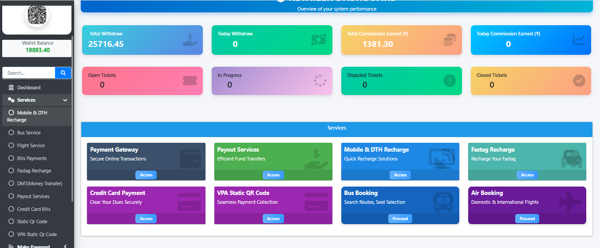
Make Payment Request (Wallet Top-up Request)
This module is used by retailers to raise a wallet top-up request. The retailer transfers funds to an admin bank account and submits payment details with proof. After verification, the admin approves/rejects the request. On approval, the amount is credited to the retailer wallet.
Quick Guide (Recommended Flow)
Follow these steps to top-up wallet correctly and avoid approval delays.
Visual Walkthrough (MP4)
This video demonstrates the complete flow of the Make Payment Request module — selecting an admin bank account, transferring funds, submitting the request form with transaction details, uploading payment proof, and tracking approval status. It is recommended to watch this video after reviewing the process steps above.
Admin Bank Details (Where to Transfer Funds)
When you open this module, you will see a list of admin bank accounts. You can choose any one account to transfer money.
Make Payment Request Form (Fields & Purpose)
After selecting a bank account and clicking Request for Make Payment, fill the form carefully. The chosen bank details are auto-filled, but you can select another bank from the dropdown if needed.
After You Submit the Request
Once submitted, the request is sent to the admin for verification.
Other Wallet Top-up Methods
Retailers may have multiple supported top-up methods depending on admin configuration.
Make Payment Report (Request Status & History)
This section displays the complete history of your Make Payment (wallet top-up) requests, including the current status and the admin remarks provided during approval or rejection. Use this page to confirm whether your request is Approved, still Pending, or Rejected.
Quick Guide (How to Use)
Use filters to quickly find requests and confirm approval before using the wallet balance.
Status Meaning (Approved / Pending / Rejected)
This report shows the processing stage of your wallet top-up requests.
Report Filters
Filters help you quickly find requests and avoid scanning long histories.
Screen Reference
The screenshot below helps users identify the filter controls, status column, and admin remarks inside the report.
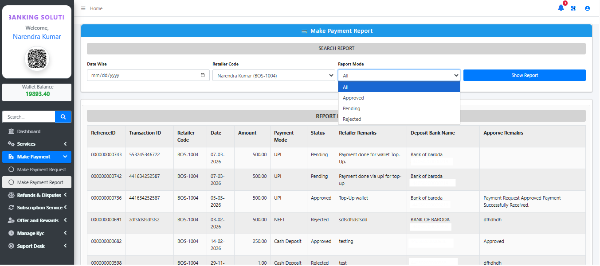
Renew Service (Subscription Services)
This module shows the services assigned to your retailer account and helps you manage their validity. You can review which services you are currently using, check upcoming expiry dates, renew expired services, and extend the validity of active services. Service pricing is also visible based on the selected plan duration (Monthly / Quarterly / Half-Yearly / Yearly).
Quick Guide (Recommended Flow)
Use this module regularly to avoid service interruption due to expiry.
What You Can Do in This Module
This module helps you monitor and maintain service continuity.
Active vs Inactive (Expired Services Handling)
Services automatically move between Active and Inactive based on expiry status.
Critical Note: Renewal Validity Calculation
Renewal validity is calculated from the previous expiry date, not from the date you renew. This ensures continuity is based on the original service cycle.
Visual Walkthrough (MP4)
This video demonstrates the complete flow of the Renew Service module — checking assigned services, reviewing expiry status, switching between Active/Inactive lists, comparing duration-based pricing, and renewing/extending services as required. It is recommended to watch this video after reviewing the steps and rules above.
Services Promo Codes (Promotional Campaigns)
This module displays all service-based promotional campaigns applicable to your retailer account. Promotions may be based on transaction volume, transaction count, or specific operational targets defined by the admin. Only campaigns assigned to eligible retailers will be visible in this section.
What This Module Shows
This section provides a real-time overview of your progress under each active promotion.
Example: Volume-Based Promotion
Promotions may vary by service type and time period depending on admin configuration.
Important Clarifications
Screen Reference
The screenshot below helps identify campaign details, volume progress, expiry countdown, and reward information.
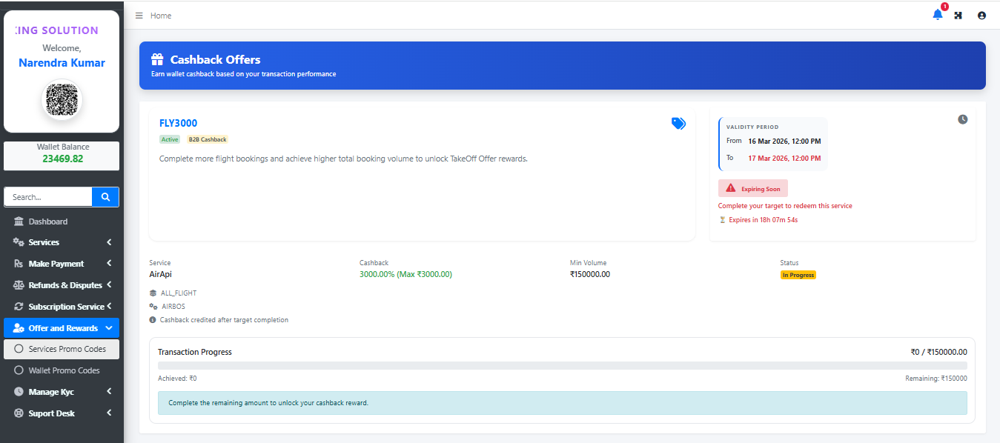
Wallet Promo Codes (Wallet Top-up Promotions)
This module displays all promotional offers related to wallet top-up transactions. These campaigns are separate from service-based promotions and are specifically applicable when you add funds to your retailer wallet.
What This Module Shows
This section provides complete details of wallet top-up related offers assigned to your account.
Example: Wallet Top-up Promotion
Wallet promotions are based on wallet load amount within a defined period.
Important Information
Screen Reference
The screenshot below helps identify promotion details, eligibility status, campaign duration, and reward information.
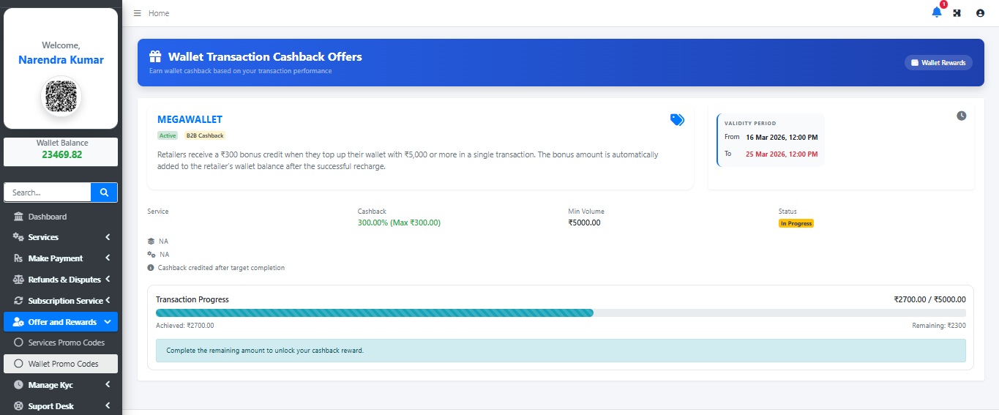
Manage KYC Update Profiles
The Update Profiles module is where a retailer completes KYC verification using Aadhaar and PAN. Aadhaar is verified first through DigiLocker using the Generate URL action. After Aadhaar verification, the system auto-fills government-verified details (and locks them from editing). Next, the retailer verifies PAN, where the system matches the Date of Birth (PAN) with Date of Birth (Aadhaar). Only when both match, the retailer is marked User Fully Verified and the Update KYC button becomes available. On successful KYC submission, a success message is shown and the system logs out automatically.
Quick Guide — Complete KYC (Aadhaar + PAN)
Follow these steps in sequence. Aadhaar must be verified first, then PAN verification completes the KYC.
Form Overview (What You See)
The KYC process is completed inside this form. The form is divided into sections and includes actions for verification and document upload.
Aadhaar Verification (Generate URL → DigiLocker)
Aadhaar is always verified first. The form provides an Aadhaar input and a Generate URL button to initiate DigiLocker verification.
Auto-Fill & Lock Rules (After Aadhaar Verification)
Once Aadhaar verification succeeds, Aadhaar-based identity fields become the source of truth and cannot be changed from this form.
PAN Verification (Verify → DOB Match)
PAN verification is enabled after Aadhaar verification. The system confirms the PAN and matches the DOB between both documents.
Action Buttons (When Each Button Appears)
Buttons change based on verification status. This ensures KYC is submitted only after both documents are verified.
After “Update KYC” (Success Message + Auto Logout)
After successful KYC completion, the platform forces a logout to refresh permissions and enable services correctly under the verified profile.
Verified vs Non-Verified (Form Behavior)
Use these side-by-side references to understand which fields/buttons appear before verification and after full verification.
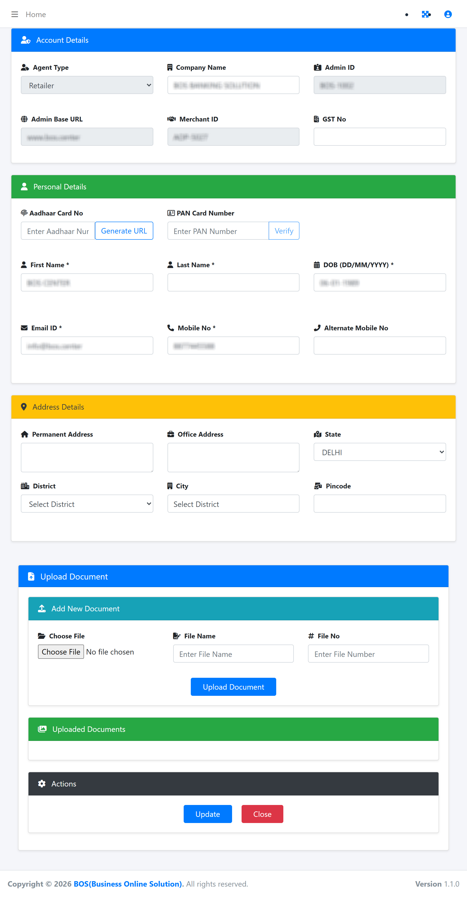
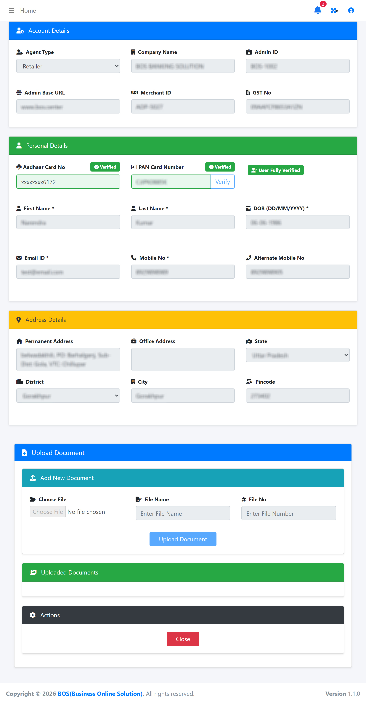
Refunds & Disputes Cancel Dispute Report
Cancel Dispute Report provides a complete view of travel cancellation request outcomes (Bus / Flight / Train). It displays the booking identifiers, journey details, fare and refundable amount, refund status progression, and admin remarks recorded against the request. The report is used to monitor whether the cancellation is still in process or has reached final closure.
Quick Guide — How to Use This Report
Use this workflow to filter cancellation records, track the current status, and review remarks and refund values.
Summary Counters (Top Cards)
These counters provide an instant count of records grouped by their current state.
Filters / Search (Locate Cancellation Records)
Use filters to narrow down the report and quickly find the required booking cancellation entry.
Refund Status Meaning (Initiated / Completed / Rejected)
Report Table Fields (What Each Column Shows)
Each row represents one booking cancellation entry with booking identifiers, journey information, and refund status.
Video Demonstration
This demo shows how to use the report: selecting service type, changing status filters, searching by Booking Ref/PNR, and reviewing refund amounts and admin remarks.
Quick Redirects
Modules commonly used before or after reviewing cancellation refund status.
Refunds & Disputes Transaction Dispute Report
Transaction Dispute Report shows the final outcome of transaction disputes after admin action. This report contains dispute records along with ticket details, service information, final remarks, and the complete complaint history. If a dispute is approved, the report also provides the refund transaction details (wallet credit reference, amount, date/time, and refund message).
Quick Guide — How to Use This Report
Use this flow to locate a dispute record, open the complete history, and verify refund details (if applicable).
Filter / Search (Find Dispute Records)
Use the available filters to quickly locate a closed dispute record. Filters may vary slightly based on your build configuration.
Report Table Fields (What Each Column Means)
Each row represents a dispute that has reached final closure. Use the Action → View option to open full complaint history.
Action → View (Complaint History Panel)
The View panel displays ticket summary, last action, last comment, transaction details, and provides quick access to timeline and refund details.
Example: {User: BOS-1004, Service: Pay Out, Priority: High, Status: Closed}
Example: Closed (13-Feb-2026 12:04)
Example: approved (BOS-1002 • 13-Feb-2026 12:04)
Example: Transaction ID: BTERF00507, UPI Ref ID: 000000000647, Debit Amount: 230.00
View Refunds Details — opens refund credit details (available when refund is processed).
Open Timeline (Ticket Lifecycle)
Timeline shows the complete progression of the dispute from creation to closure, with timestamp and actor at each step.
Ticket Created (Open) → Status InProgress → Status Dispute → Status Closed
Each entry includes: Status, comment/remark, user/employee, and date/time.
View Refunds Details (Refund Credit Information)
When a dispute results in a refund, this panel displays the wallet credit transaction record.
Example: Transfer From: Admin → Transfer To: BOS-1004
Example: Your wallet has been credited with ₹215.00 as the refundable amount for the Pay Out disputed transaction of BTERF00507.
Video Demonstration
This demo walks through the full report usage: applying filters, opening View, checking the timeline, and verifying the refund credit entry when a refund is processed.
Quick Redirects
Commonly used modules related to disputes and transaction verification.
Support Desk Ticket & Support
This module displays all tickets raised from Report → Transaction Report. It allows you to monitor ticket status, communicate through the ticket chat, and track dispute or refund outcomes until final resolution.
First-Time Guide — Track and Manage a Ticket
Follow this recommended workflow to understand and manage ticket resolution.
Ticket Status Lifecycle
Ticket Communication (Chat Thread)
Centralized communication channel for updates and clarification.
Visual Reference
The following screenshots illustrate the ticket listing view and the ticket chat format. Use them to understand layout, status placement, and communication structure.
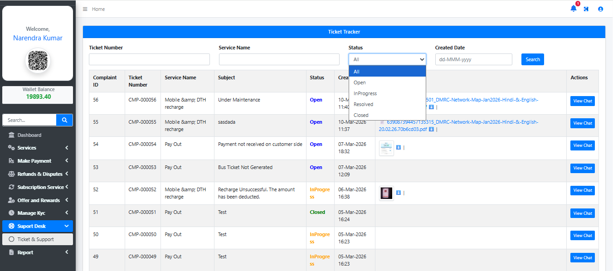
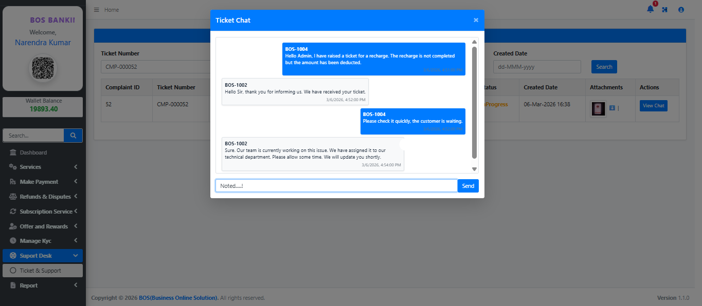
Related Modules
Report → Transaction Report
View the original transaction entry from which the ticket was raised.
Refunds & Disputes → Transaction Dispute Report
Track dispute processing status and final refund decisions.
Transaction Report Retailer Transaction Report
This section provides a consolidated view of your service-wise transaction history and related wallet movements. Reports are displayed based on the services enabled for your account. It also allows you to raise a transaction-related support ticket directly from the report table.
First-Time Guide — How to Check Reports Correctly
Follow these steps to filter the report correctly, verify transaction entries, and raise a ticket only when required.
What You Will See in This Module
Use this quick reference to understand report grouping and where each entry comes from.
Service Reports
Reports shown as per services enabled for your account (Recharge, BBPS, DMT, AEPS, Travel, etc.). Each service report includes a Report Mode section for sub-reports (example: history + commission).
Deposit
Wallet credit entries from multiple sources (Make Payment approval, Wallet transfer, refunds, cashback/bonus, APK deposits).
Transfer Report
Wallet transfers initiated from the APK side (transfer to self bank / transfer to another retailer mobile).
Video Demonstration — Filter Report & Raise Ticket
This video explains how to apply report filters, locate a specific transaction in the report table, and raise a ticket using the Raise Complaint action for that transaction.
Filter & Export — What Each Field Means
Use the filter panel at the top of the Transaction Report screen to locate transactions accurately and export the filtered report when required.
Raise Ticket — Quick Reference (Internal)
Use this quick flow to raise a ticket directly from a transaction row.
- Service: Mobile & DTH recharge (against which the ticket is raised)
- Transaction No: BTERF00463
- Transaction Summary details
- Subject: Wallet dedeucted but recharge not successful
- Description: Customer recharged failed but wallet amount was dedducted
- Attach Files: Option to upload up to 3 files
Ticket Status Lifecycle
After raising a ticket from the transaction row, track it under Support Desk and follow the status updates.
Service Reports (Recharge / BBPS / Other Services)
These reports appear based on services enabled for your account.
Deposit (Wallet Credit Entries)
This report contains wallet credit entries. Each entry is grouped under a Report Mode based on the source of the credit.
Transfer Report (APK Transfers)
This report contains wallet transfers initiated from the retailer APK.
Quick Redirects
Modules referenced in transaction monitoring, wallet credits, and ticket tracking.
Subscription Services → Renew Service
Check assigned services and renew expired services.
Make Payment → Make Payment Request
Submit a wallet top-up request.
Make Payment → Make Payment Report
Track approval status of wallet top-up requests.
Offer & Rewards → Services Promo Codes
View service-based promotions and progress.
Offer & Rewards → Wallet Promo Codes
View wallet top-up promotions and cashback criteria.
Support Desk → Ticket & Support
Raise and track tickets for transaction issues (pending/failed/refund).
Report VPA Transaction Report
The VPA Transaction Report is the official record of payments collected through your UPI QR / VPA. Use this report to confirm whether a customer payment is received or not received. For any dispute or confirmation, rely on this report (not customer screenshots).
First-Time Guide — Verify QR/VPA Collections
Use this recommended flow to ensure your QR is usable (APK), the service is active (Subscription), and the payment status is confirmed from this report.
QR Availability Check (APK)
Confirm QR/VPA Service is Active
QR/VPA collections are subscription-based. Verify eligibility before accepting QR/VPA payments.
To verify whether QR/VPA collection is enabled for your account, open:
This section displays the service status as Active, Expired, or Not Assigned. If the service is not active, collections may not work until it is renewed or activated.
Filters Available
Report Columns (What You Will See)
These fields help you validate the payment and identify the exact outcome.
How to Interpret Status
- Success Payment received. You may proceed with the customer request.
- Failed Payment not received. Check Gateway Message for the exact reason.
Visual Reference — VPA Transaction Report
This reference screen helps you match the report layout with your panel and quickly identify each column, especially Status and Gateway Message during confirmation or dispute checks.
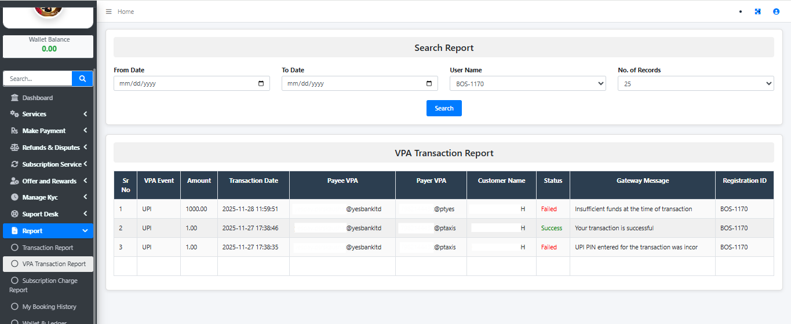
Quick Redirects
Use these related modules to verify service eligibility and other transaction entries corresponding to successful transactions.
Subscription Services → Renew Service
Confirm whether QR/VPA service is active, expired, or not assigned for your account.
Report → Transaction Report
Verify other transaction entries corresponding to successful transactions.
Report Subscription Charge Report
The Subscription Charge Report shows all subscription/service fee deductions applied to your retailer account. These entries are created when a service is activated for you or when you renew a service from your panel. Use this report to confirm the deduction amount, the deduction date/time, and the exact remarks/reference recorded by the system.
First-Time Guide — Verify Subscription Deductions
Follow this recommended flow to locate the exact deduction entry and confirm why it was applied.
Filters Available
Report Columns (What You Will See)
These fields help you confirm the exact subscription deduction entry and its supporting reference details.
How to Read Subscription Charge Entries
- Identify the correct timeframe: Use From Date and To Date around the service activation/renewal date.
- Confirm it is a subscription entry: Check Service Type as Subscription Charge.
- Validate deduction: For subscription fees, the amount should appear in DR (Debit).
- Confirm narration: Use Remarks + Msg Remarks to confirm the service/plan context.
- Keep reference: Note Transaction No / UTR No when sharing details with support.
Visual Reference — Subscription Charge Report
The reference screen below shows the exact layout used in the Retailer Panel. While verifying any deduction, focus on Service Type, DR, Tran. Amt, and the Remarks column to confirm the charge reason.
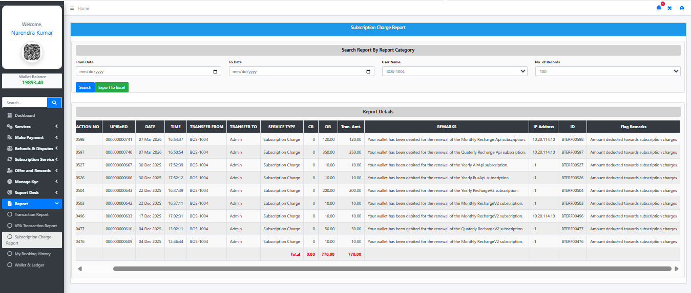
Quick Redirects
Use the modules below to confirm whether the service is active and to verify wallet-level impact of the charge.
Subscription Services → Renew Service
Confirm whether the service is Active, Expired, or pending renewal. This verifies eligibility and validity period.
Wallet → Ledger / Wallet Report
Cross-check the wallet debit entry for the same date and amount to validate that the subscription fee was deducted.
Report My Booking History
My Booking History is the unified report where you can view, manage, and track all your travel bookings across
Flight, Bus, Hotel, and Train.
Bookings are organized by trip status: Upcoming, Cancelled/Refunded, and Completed.
From this section you can also download e-tickets and initiate cancellation (where cancellation is permitted).
Any cancellation initiated from here is routed to Refunds & Disputes → Cancel Dispute Report,
where you can track the cancellation status as Initiated, Completed, or Rejected,
along with admin remarks.
First-Time Guide — Find, Download, and Cancel a Booking
Follow this recommended flow to locate your booking quickly, download the ticket, and initiate cancellation only when eligible.
What You Will See in This Module
This module is structured in two levels: Service selection first, then trip status tabs.
- Upcoming: All upcoming journeys/stays. This is also the main workspace to initiate cancellation (if allowed).
- Cancelled/Refunded: All cancelled bookings and refund-related entries (as applicable for the service).
- Completed: Completed journeys/stays for the selected service.
Filters & Search (To Find Your Trips Faster)
Use filters to quickly locate a booking for viewing, downloading the ticket, or initiating cancellation. Filter availability may vary slightly by service (Flight/Bus/Hotel/Train).
Download / View E-Ticket
Use this action to view the itinerary and download the e-ticket for your booking.
Cancellation (Upcoming Trips) — Eligibility, Charges & Refund Preview
Cancellations are initiated from the Upcoming tab of the selected service. Before confirming cancellation, the system shows whether the trip is cancellable and displays the expected refund details, including applicable cancellation charges.
- Refundable Amount (as per policy and booking type)
- Cancellation Charges (service/supplier-based charges, if applicable)
- Net Refund that will be processed after cancellation confirmation
Cancellation Status Tracking — Cancel Dispute Report
After cancellation is initiated, track the final status and remarks from the dispute report.
- Initiated: Cancellation request is submitted and under processing.
- Completed: Cancellation is finalized and refund processing (if applicable) is completed.
- Rejected: Cancellation is rejected (policy/validation failure). The report will show admin remarks.
Video Demonstration — Filter Booking & Cancel Ticket
This video explains how to apply booking filters, locate a specific booking in My Booking History, and initiate cancellation for an eligible upcoming booking from the report.
Quick Redirects
Related module for cancellation tracking and dispute status.
Refunds & Disputes → Cancel Dispute Report
Track Initiated / Completed / Rejected status with admin remarks for cancellation requests.